🦁 幽港迷城：雄狮之颚
Gloomhaven: Jaws of the Lion · 设计：Isaac Childres · Cephalofair Games 出版 · 1–4 人 · 官方英文规则书全文翻译（32 页 · AI 辅助机翻）
本页为《幽港迷城：雄狮之颚》（Gloomhaven: Jaws of the Lion, 2020）官方英文规则书的全文中文翻译，底本为 官方文件 · 1jour-1jeu 托管（d7-gloomhaven-jaws-of-the-lion-rulebook.pdf，32 页），整本译出、未删节，原版规则书页面随文嵌入——点击任意图片即可放大查看。规则内容归 Cephalofair Games 及版权方所有，译文仅供个人学习查阅。
整理说明：本页由 AI 辅助机翻整本规则书并按本站术语口径对齐（牌库/手牌/回合/轮/板块/指示物等），数字与费用逐段保留原文口径；如对规则细节有疑问，请以随文原书页面或上方官方原文 PDF 为准。每页译文上方为对应的原版规则书页面。
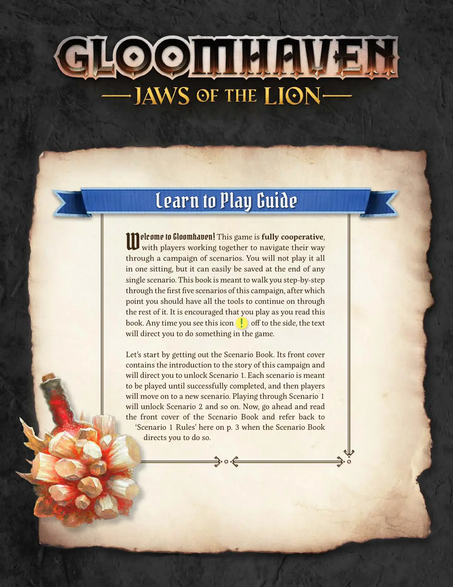
欢迎来到悲叹之城！这款游戏是完全合作性质的，
玩家们将共同努力，通过一系列战役场景来推进游戏。
你不会一次性玩完整个游戏，但在任何单个场景结束时都可以轻松保存。
本书旨在一步步引导你完成战役的前五个场景，之后你应该已经掌握了继续完成剩余场景所需的所有工具。
建议你在阅读本书的同时进行游戏。每当看到这个图标 在旁边时，文本会指导你在游戏中进行某些操作。
首先，让我们拿出场景书。它的封面包含了这个战役故事的介绍，并将指导你解锁场景1。每个场景都应该被玩到成功完成，然后玩家们将进入新场景。完成场景1将解锁场景2，以此类推。现在，请阅读场景书的封面，并在场景书指示你这样做时，回到第3页的"场景1规则"。
!
新手指南
新手指南
PUSH - 强制目标远离。
PULL - 强制目标靠近。
Dial
在角色达到5级之前，不要打开这组卡牌！
届时，翻转此卡牌并阅读背面以获取进一步指示。
在接到指示之前，不要打开这组卡牌！
这些卡牌会随着你的角色变得更强大而被添加到你的攻击修饰牌库中，因此在战役开始时你不需要它们。
Figure
Character Mat
Active
Conditions
Discard
Lost
Items
Attack 3
d
ff
A
Piston Punch
6 Cards labeled "A"
A
on Pu
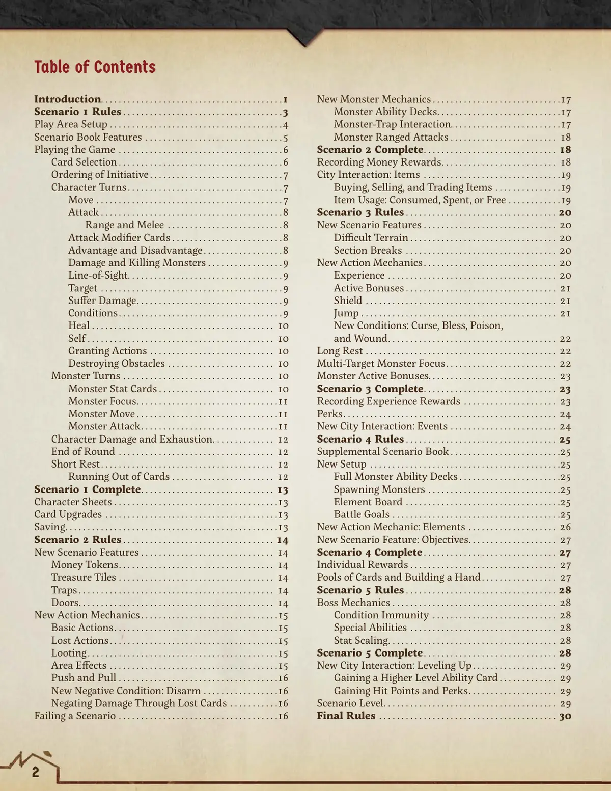
目录
介绍. . . . . . . . . . . . . . . . . . . . . . . . . . . . . . . . . . . . . . . . .1
场景1规则. . . . . . . . . . . . . . . . . . . . . . . . . . . . . . . . . . . . 3
游戏区域设置. . . . . . . . . . . . . . . . . . . . . . . . . . . . . . . . . . . . . . . 4
场景书特性. . . . . . . . . . . . . . . . . . . . . . . . . . . . . . . . . . . . . 5
游戏进行. . . . . . . . . . . . . . . . . . . . . . . . . . . . . . . . . . . . . 6
卡牌选择. . . . . . . . . . . . . . . . . . . . . . . . . . . . . . . . . . . . . 6
行动顺序. . . . . . . . . . . . . . . . . . . . . . . . . . . . . . . 7
角色回合. . . . . . . . . . . . . . . . . . . . . . . . . . . . . . . . . . . 7
移动. . . . . . . . . . . . . . . . . . . . . . . . . . . . . . . . . . . . . . . . . . 7
攻击. . . . . . . . . . . . . . . . . . . . . . . . . . . . . . . . . . . . . . . . . 8
远程和近战. . . . . . . . . . . . . . . . . . . . . . . . . . . . . . 8
攻击修正卡牌. . . . . . . . . . . . . . . . . . . . . . . . . . . . . . 8
优势和劣势. . . . . . . . . . . . . . . . . . . . . . . . . . . . . . 8
伤害与消灭怪物. . . . . . . . . . . . . . . . . . . . . . . . 9
视线. . . . . . . . . . . . . . . . . . . . . . . . . . . . . . . . . . . 9
目标. . . . . . . . . . . . . . . . . . . . . . . . . . . . . . . . . . . . . . . . . 9
承受伤害. . . . . . . . . . . . . . . . . . . . . . . . . . . . . . . . . 9
状态. . . . . . . . . . . . . . . . . . . . . . . . . . . . . . . . . . . . . 9
治疗. . . . . . . . . . . . . . . . . . . . . . . . . . . . . . . . . . . . . . . . . 10
自我. . . . . . . . . . . . . . . . . . . . . . . . . . . . . . . . . . . . . . . . . . 10
授予行动. . . . . . . . . . . . . . . . . . . . . . . . . . . . . 10
摧毁障碍物. . . . . . . . . . . . . . . . . . . . . . . . . . . . . 10
怪物回合. . . . . . . . . . . . . . . . . . . . . . . . . . . . . . . . . . . 10
怪物状态卡牌. . . . . . . . . . . . . . . . . . . . . . . . . . . 10
怪物专注. . . . . . . . . . . . . . . . . . . . . . . . . . . . . . . . 11
怪物移动. . . . . . . . . . . . . . . . . . . . . . . . . . . . . . . . 11
怪物攻击. . . . . . . . . . . . . . . . . . . . . . . . . . . . . . . 11
角色伤害与疲劳. . . . . . . . . . . . . . . . . . . . . . . . 12
回合结束. . . . . . . . . . . . . . . . . . . . . . . . . . . . . . . . . . . . 12
短休息. . . . . . . . . . . . . . . . . . . . . . . . . . . . . . . . . . . . . . . . 12
卡牌用尽. . . . . . . . . . . . . . . . . . . . . . . . . . . . . . 12
场景1完成. . . . . . . . . . . . . . . . . . . . . . . . . . . . . . . 13
角色表. . . . . . . . . . . . . . . . . . . . . . . . . . . . . . . . . . . . . 13
卡牌升级. . . . . . . . . . . . . . . . . . . . . . . . . . . . . . . . . . . . . . . 13
保存. . . . . . . . . . . . . . . . . . . . . . . . . . . . . . . . . . . . . . . . . . . . . . . . 13
场景2规则. . . . . . . . . . . . . . . . . . . . . . . . . . . . . . . . . . . 14
新场景特性. . . . . . . . . . . . . . . . . . . . . . . . . . . . . . . 14
金钱指示物. . . . . . . . . . . . . . . . . . . . . . . . . . . . . . . . . . . . 14
宝藏板块. . . . . . . . . . . . . . . . . . . . . . . . . . . . . . . . . . . . 14
陷阱. . . . . . . . . . . . . . . . . . . . . . . . . . . . . . . . . . . . . . . . . . . . . 14
门. . . . . . . . . . . . . . . . . . . . . . . . . . . . . . . . . . . . . . . . . . . . . 14
新行动机制. . . . . . . . . . . . . . . . . . . . . . . . . . . . . . . 15
基本行动. . . . . . . . . . . . . . . . . . . . . . . . . . . . . . . . . . . . . 15
丢失的行动. . . . . . . . . . . . . . . . . . . . . . . . . . . . . . . . . . . . . . 15
掠夺. . . . . . . . . . . . . . . . . . . . . . . . . . . . . . . . . . . . . . . . . . . 15
区域效果. . . . . . . . . . . . . . . . . . . . . . . . . . . . . . . . . . . . . . 15
推和拉. . . . . . . . . . . . . . . . . . . . . . . . . . . . . . . . . . . . 16
新负面状态：解除武装. . . . . . . . . . . . . . . . . 16
通过丢失卡牌抵消伤害. . . . . . . . . . . 16
场景失败. . . . . . . . . . . . . . . . . . . . . . . . . . . . . . . . . . . . 16
新怪物机制. . . . . . . . . . . . . . . . . . . . . . . . . . . . . . 17
怪物能力牌库. . . . . . . . . . . . . . . . . . . . . . . . . . . . 17
怪物-陷阱互动. . . . . . . . . . . . . . . . . . . . . . . . . . . . .17
怪物远程攻击. . . . . . . . . . . . . . . . . . . . . . . . . 18
场景2完成. . . . . . . . . . . . . . . . . . . . . . . . . . . . . . . 18
记录金钱奖励. . . . . . . . . . . . . . . . . . . . . . . . . . . 18
城市互动：物品. . . . . . . . . . . . . . . . . . . . . . . . . . . . . . . 19
购买、出售和交易物品. . . . . . . . . . . . . . . 19
物品使用：消耗、使用或免费. . . . . . . . . . . 19
场景3规则. . . . . . . . . . . . . . . . . . . . . . . . . . . . . . . . . . . 20
新场景特性. . . . . . . . . . . . . . . . . . . . . . . . . . . . . . . 20
困难地形. . . . . . . . . . . . . . . . . . . . . . . . . . . . . . . . . . 20
章节分隔 . . . . . . . . . . . . . . . . . . . . . . . . . . . . . . . . . . . 20
新行动机制. . . . . . . . . . . . . . . . . . . . . . . . . . . . . . . 20
经验. . . . . . . . . . . . . . . . . . . . . . . . . . . . . . . . . . . . . . . 20
激活奖励 . . . . . . . . . . . . . . . . . . . . . . . . . . . . . . . . . . . 21
护盾 . . . . . . . . . . . . . . . . . . . . . . . . . . . . . . . . . . . . . . . . . . . . 21
跳跃 . . . . . . . . . . . . . . . . . . . . . . . . . . . . . . . . . . . . . . . . . . . . . 21
新状态：诅咒、祝福、中毒和伤口 . . . . . . . . . . . . . . . . . . . . . . . . . . . . . . . . . . . . . . . 22
长休息 . . . . . . . . . . . . . . . . . . . . . . . . . . . . . . . . . . . . . . . . . . . . 22
多目标怪物专注 . . . . . . . . . . . . . . . . . . . . . . . . . . . . . . . 22
怪物激活奖励 . . . . . . . . . . . . . . . . . . . . . . . . . . . . . 23
场景3完成 . . . . . . . . . . . . . . . . . . . . . . . . . . . . . . . 23
记录经验奖励 . . . . . . . . . . . . . . . . . . . . . . . . . . . . 23
特长 . . . . . . . . . . . . . . . . . . . . . . . . . . . . . . . . . . . . . . . . . . . . . . . . 24
新的城市互动：事件 . . . . . . . . . . . . . . . . . . . . . . . . . 24
场景4规则 . . . . . . . . . . . . . . . . . . . . . . . . . . . . . . . . . . . 25
补充场景书 . . . . . . . . . . . . . . . . . . . . . . . . . . . . . . . . . . . 25
新设置 . . . . . . . . . . . . . . . . . . . . . . . . . . . . . . . . . . . . . . . . . . 25
完整怪物能力牌库 . . . . . . . . . . . . . . . . . . . . . . . . 25
生成怪物 . . . . . . . . . . . . . . . . . . . . . . . . . . . . . . 25
元素版图 . . . . . . . . . . . . . . . . . . . . . . . . . . . . . . . . . . . 25
战斗目标 . . . . . . . . . . . . . . . . . . . . . . . . . . . . . . . . . . . . . 25
新行动机制：元素 . . . . . . . . . . . . . . . . . . . . . . . . . . 26
新场景特性：目标 . . . . . . . . . . . . . . . . . . . . . . . . . . 27
场景4完成 . . . . . . . . . . . . . . . . . . . . . . . . . . . . . . . 27
个人奖励 . . . . . . . . . . . . . . . . . . . . . . . . . . . . . . . . . . 27
卡牌池与构筑手牌 . . . . . . . . . . . . . . . . . . . . . . . . . 27
场景5规则 . . . . . . . . . . . . . . . . . . . . . . . . . . . . . . . . . . . 28
Boss机制 . . . . . . . . . . . . . . . . . . . . . . . . . . . . . . . . . . . . . 28
状态免疫 . . . . . . . . . . . . . . . . . . . . . . . . . . . . . 28
特殊能力 . . . . . . . . . . . . . . . . . . . . . . . . . . . . . . . . . . 28
属性缩放 . . . . . . . . . . . . . . . . . . . . . . . . . . . . . . . . . . . . . . 28
场景5完成 . . . . . . . . . . . . . . . . . . . . . . . . . . . . . . . 28
新的城市互动：升级 . . . . . . . . . . . . . . . . . . . . . . . . . 29
获得更高级能力卡牌 . . . . . . . . . . . . . . . . . . . . . . . . . 29
获得生命值和特长 . . . . . . . . . . . . . . . . . . . . . . . . . . 29
场景等级. . . . . . . . . . . . . . . . . . . . . . . . . . . . . . . . . . . . . . . . 29
最终规则. . . . . . . . . . . . . . . . . . . . . . . . . . . . . . . . . . . . . . . . . 30
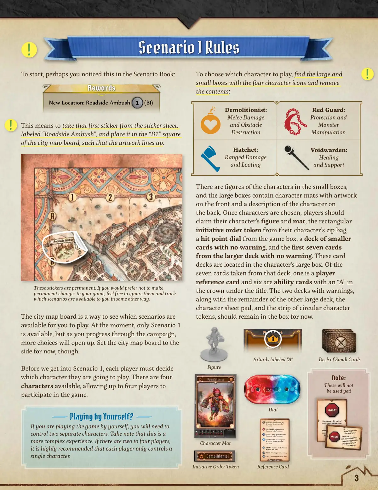
首先，也许你在情景书中注意到了这一点：
城市地图版图是一种查看有哪些情景可供你游玩的方式。目前，只有情景1可用，但随着你进行战役，更多选择将会解锁。不过，现在请将城市地图版图放到一边。
在我们开始情景1之前，每位玩家必须决定要扮演哪个角色。有四个角色可供选择，最多可容纳四名玩家参与游戏。
要选择扮演哪个角色，找到带有四个角色图标的和大小的盒子，并取出其中的内容：
小盒子里有角色的模型，大盒子里有角色垫，正面有艺术图，背面有角色描述。一旦角色选定，玩家应领取自己角色的模型和垫子、来自角色密封袋中的长条形行动顺序指示物、游戏盒中的生命值轮盘、一套无警告的小卡牌，以及来自另一套大卡牌的前七张卡牌。这些卡牌牌组位于角色的大盒子中。从该牌组中取出的七张卡牌中，一张是玩家参考卡，六张是标题王冠下带有"A"的能力卡。两套带警告的牌组，以及另一套大卡牌的剩余部分、角色垫纸和圆形角色指示物条，应暂时留在盒子里。
爆破专家：
近战伤害
和障碍物破坏
伐木工：
远程伤害
和掠夺
红色卫兵：
防护和
怪物操控
虚空守望者：
治疗
和支援
情景1规则
情景1规则
− 单人游玩？ −
注意：
这些暂时不会用到！
如果你独自游玩游戏，你需要控制两个不同的角色。请注意，这是一种更复杂的体验。如果有两到四名玩家，强烈建议每位玩家只控制一个角色。
!
参考卡
这些贴纸是永久性的。如果你不想对游戏做出永久性改变，可以忽略它们，并以其他方式跟踪哪些情景可用。
这意味着从贴纸纸上取下第一张贴纸，标记为"路边伏击"，并将其放置在城市地图版图的"B1"方格中，使艺术图对齐。
!
!
奖励
新地点：路边伏击1 (B1)
小卡牌牌组
行动顺序指示物
玩家参考卡
混乱 - 所有攻击获得劣势。在下一个回合结束时移除。
定身 - 无法移动。在下一个回合结束时移除。
眩晕 - 无法执行行动。在下一个回合结束时移除。
强化 - 所有攻击获得优势。在下一个回合结束时移除。
缴械 - 无法攻击。在下一个回合结束时移除。
Dial
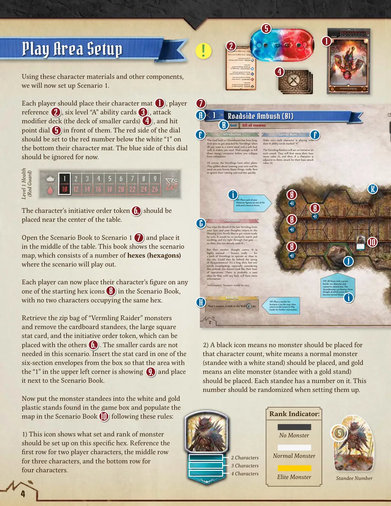
使用这些角色组件和其他组件，
我们现在将设置场景1。
每位玩家应将他们的角色垫 、玩家
参考卡 、六张"A"级能力卡 、攻击
修正牌库（较小的牌库） 和生命值
轮盘 放在自己面前。轮盘的红色面
应设置在其角色垫底部白色"1"下方的
红色数字上。此轮盘的蓝色面目前
应忽略。
角色的先攻顺序指示物 应
放置在桌子中央附近。
打开场景书到场景1 并将其放在
桌子中央。这本书展示了场景地图，
由多个六边形（六角形）组成，
场景将在这些六边形上进行。
现在每位玩家可以将他们的角色
模型放在场景书中的任意一个
起始六边形图标 上，且没有两个
角色占据同一个六边形。
取出"Vermling Raider"怪物的
拉链袋，取出纸板立牌、大方形
状态卡和先攻顺序指示物，后者可以
与其他指示物一起放置 。较小的卡牌
在本场景中不需要。将状态卡插入
盒子中的六格信封之一，使左上角
标有"1"的区域朝外 ，并将其放在
场景书旁边。
现在将怪物立牌放入游戏盒中找到的
白色和金色塑料底座中，并按照以下规则
在场景书的地图上放置立牌 ：
1) 此图标显示应在特定六边形上
设置什么系列和等级的怪物。参考
两角色玩家的第一行，三角色玩家的
中间行，以及四角色玩家的底行。
6.
6.
9.
2) 黑色图标表示不应放置怪物，白色表示
应放置普通怪物（白色底座的立牌），
金色表示应放置精英怪物（金色底座的立牌）。
每个立牌上都有一个数字。设置时应
对此数字进行随机化。
游戏区域设置
游戏区域设置
!
玩家参考卡
混乱 - 所有攻击获得劣势。在下一个
回合结束时移除。
定身 - 无法移动。在下一个
回合结束时移除。
眩晕 - 无法执行行动。在下一个
回合结束时移除。
强化 - 所有攻击获得优势。在下一个
回合结束时移除。
缴械 - 无法攻击。在下一个
回合结束时移除。
推 - 强制目标远离移动。
拉 - 强制目标靠近移动。
奖励
特殊规则
结论
介绍
目标
消灭所有敌人
路边伏击(B1)
确保每个角色使用的是标记为"A"的
6张能力卡。
Vermling Raiders每回合将在先攻50行动。
他们将首先移动基础移动值（1），然后，
如果有角色相邻，他们将进行基础攻击
值（2）的攻击。
新地点：墙上的洞 (B1)
返回 gloomhaven 的路途漫长。
现在，当你只想吃上一顿热饭，睡上一张软床时，
却遭到 Vermling 的攻击，嗯，这会让你发疯。
疯到足以在你精疲力竭之前，
杀死这些肮脏的生物。
当然，Vermling 们另有计划。
他们叽叽喳喳地想要你的钱和你骨头上的肉。
真是些讨厌的东西。最好
忽略他们的胡言乱语，尽快结束这一切。
你擦掉脸上最后一个 Vermling 的血，
思绪回到了 Sleeping Lion。他们现在肯定已经准备好炖菜了。
它会是那么温暖舒适，而且就在那扇门后面——
如此接近，你 already 能尝到它的味道...
但随后另一个想法浮现。这非常不寻常——
说真的，太放肆了——
一群 Vermling 竟然在城市附近活动。
他们是否与一系列失踪案有关？
这可能性很小，但值得调查，
特别是考虑到这个伏击点看起来不像他们的基地。
附近可能有一个巢穴，
幸运的话，会有更多信息。
还有宝藏。宝藏会很好。
提示：所有带有绿色边框的六边形都是障碍物，
无法移动进入。然而，爆破专家可以摧毁它们，
之后它们会变成普通六边形。
提示：将你的角色人物放在标记的入口六边形上。
提示：在地图上贴上场景 2 的贴纸，
然后返回入门指南获取进一步说明。
S
A
B
E
F
G
i
i
激活
状态
弃置
遗失
物品
无怪物
普通怪物
精英怪物
等级指示器：
2 个角色
3 个角色
4 个角色
H
K
1级生命值
（红色守卫）
底座编号
J
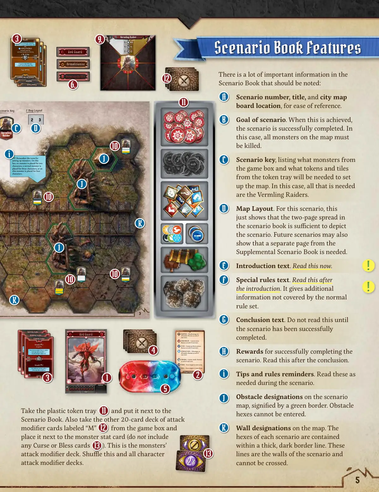
取出塑料指示物托盘，放在
场景书旁边。同时从游戏盒中取出标记为"M"的另一副20张攻击修正卡牌
，放在怪物状态卡旁边（不要包含任何诅咒或祝福卡牌13）。这是怪物的
攻击修正牌库。洗这副牌以及所有角色攻击修正牌库。
场景书中包含大量重要信息，需要注意：
场景编号、标题和城市地图
板位置，以便于参考。
场景目标。当达成此目标时，
场景即成功完成。在这种情况下，地图上的所有怪物必须被消灭。
场景密钥，列出游戏盒中的哪些怪物以及指示物托盘中的哪些指示物和板块
将用于设置地图。在这种情况下，只需要"Vermling Raiders"（蠕虫掠夺者）。
地图布局。对于此场景，这仅表明场景书中的双页展开图足以描绘该场景。
未来的场景也可能表明需要使用补充场景书中的单独页面。
介绍文本。现在阅读此文本。
特殊规则文本。在介绍后阅读。它提供了常规规则集未涵盖的额外信息。
结论文本。直到场景成功完成后才阅读。
成功完成场景的奖励。在结论后阅读。
提示和规则提醒。在场景进行过程中根据需要阅读。
场景地图上的障碍物标记，由绿色边框表示。障碍物六边形格不能进入。
地图上的墙壁标记。每个场景的六边形格都包含在一条粗的深色边框线内。这些线条是场景的墙壁，不能跨越。
A
B
C
D
E
F
G
H
i
J
场景书特性
场景书特性
!
!
K
玩家参考
MUDDLE - 所有攻击处于劣势。在下一个回合结束时移除。
IMMOBILIZE - 不能移动。在下一个回合结束时移除。
STUN - 不能执行行动。在下一个回合结束时移除。
STRENGTHEN - 所有攻击处于优势。在下一个回合结束时移除。
DISARM - 不能攻击。在下一个回合结束时移除。
PUSH - 强制目标远离移动。
PULL - 强制目标靠近移动。
Vermling Raider（蠕虫掠夺者）
Vermling Raider（蠕虫掠夺者）
Vermling Raider（蠕虫掠夺者）
Vermling Raider（蠕虫掠夺者）
20 22 24 26
激活
状态
弃置
遗失
物品
攻击 2
一个相邻的敌人受到
2点伤害（加上修正值）。
攻击 2
目标所有相邻敌人
所有相邻敌人受到
2点伤害（每个敌人单独计算修正值）。
A
旋转刺击
移动 4
最多移动4个六边形格。
攻击 2
射程 2
IMMOBILIZE（定身）
2个六边形格内的一个敌人受到2点伤害
（加上修正值——相邻时处于劣势）
并且在下一个回合结束前不能移动。
A
致盲镰刀
攻击 2
一个相邻的敌人受到
2点伤害（加上修正值）。
攻击 3
射程 2
2格内的一个敌人受到
3点伤害（加上修正值—
相邻时处于劣势）。
A
燃烧镰刀
兽人掠夺者
地图布局
场景关键
提示：记住设置怪物的图标。在这个
六边形格，两个角色时不放置怪物，
三个角色时放置普通怪物，或四个角色时放置精英怪物。
C
D
i
眩晕
目标：一个相邻敌人
一个相邻敌人直到其下一个回合结束前无法执行任何行动。
攻击 3
一个相邻敌人受到
3点伤害（加上修正值）。
A
活塞拳击
移动 2
摧毁一个射程为3的障碍物。
移动最多2格，然后在3格内的一个障碍物上放置一个摧毁标记。它现在被视为一个普通六边形格。
攻击 3
混乱
一个相邻敌人受到3点伤害
（加上修正值）并在其所有攻击上获得劣势，直到其下一个回合结束。
A
内爆
移动 2
摧毁一个相邻障碍物。
如果你这样做，执行
强化
自身
攻击 3
一个相邻敌人受到
3点伤害（加上修正值）。
直到你的下一个回合结束，你在所有攻击上获得优势。
A
击倒支援
6.
9.
K
K
J
J
J
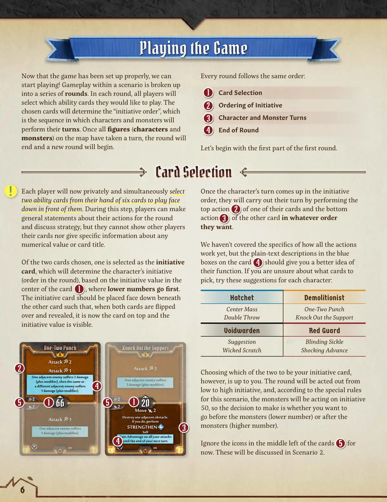
每位玩家现在将私下且同时从他们六张手牌中选择两张能力牌，面朝下放在自己面前。在此步骤中，玩家可以就本回合的行动发表一般性声明并讨论策略，但他们不能向其他玩家展示自己的牌，也不能提供任何关于数值或牌名的具体信息。
在选定的两张牌中，一张被选为行动顺序牌，它将决定角色的行动顺序（回合中的顺序），基于牌中央的行动顺序值 ，数值较小的先行动。
行动顺序牌应面朝下放在另一张牌下方，这样当两张牌都被翻转并展示时，它现在成为顶部的牌，且行动顺序值可见。
当角色的轮次在行动顺序中到来时，他们将执行其中一张牌的顶部行动 和另一张牌的底部行动 ，顺序由他们自己决定。
我们尚未涵盖所有行动如何运作的具体细节，但卡牌蓝色框中的纯文本描述应该能让您更好地了解它们的功能。如果您不确定选择哪些牌，可以尝试为每个角色提供以下建议：
然而，选择哪张作为您的行动顺序牌由您决定。回合将从低到高行动顺序进行执行，根据本场景的特殊规则，怪物将在行动顺序50时行动，因此需要决定的是您是否想在怪物之前行动（数值较低）或在怪物之后行动（数值较高）。
暂时忽略卡牌中左中部的图标 。这些将在场景2中讨论。
现在游戏已正确设置，我们可以开始游戏了！场景内的游戏被分解为一系列回合。在每个回合中，所有玩家将选择他们想要打出的能力牌。选定的牌将决定"行动顺序"，即角色和怪物执行其回合的顺序。当地图上所有单位（角色和怪物）都行动完毕后，回合结束，新回合开始。
每个回合遵循相同的顺序：
牌选择
行动顺序排序
角色和怪物回合
回合结束
让我们从第一回合的第一部分开始。
斧头
爆破专家
集中火力
连击
双重投掷
击倒支援
虚空守望者
红色卫兵
建议
致盲镰刀
邪恶抓击
突进
游戏进行中
游戏进行中
牌选择
牌选择
牌选择
!
攻击 3
一个相邻敌人受到3点伤害（加上修正值）。
A
击倒支援
移动 2
摧毁一个相邻障碍物。
如果这样做，执行
强化
自身
直到你的下一个回合结束，你在所有攻击中获得优势。
攻击 2
攻击 1
一个相邻的敌人受到2点伤害（加上修正值），然后同一个或另一个相邻的敌人受到1点伤害（加上修正值）。
A
一记重拳
攻击 1
一个相邻的敌人受到1点伤害（加上修正值）。
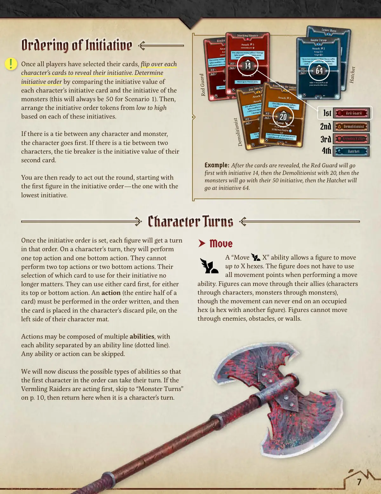
当所有玩家都选择了他们的卡牌后，翻开每张角色卡牌以揭示其先攻值。通过比较每张角色先攻卡牌的先攻值和怪物的先攻值（在场景1中这总是50）来确定先攻顺序。然后，根据这些先攻值从低到高排列先攻顺序指示物。
如果任何角色和怪物之间出现平局，则角色先行动。如果两个角色之间出现平局，则平局判定依据是他们第二张卡牌的先攻值。
然后你就可以开始执行这一轮，从先攻顺序中的第一个角色开始——即先攻值最低的那个角色。
示例：卡牌揭示后，红色卫兵将先行动，先攻值为14，然后是爆破专家，先攻值为20，然后是怪物将以50的先攻值行动，然后是斧头手，先攻值为64。
先攻顺序
先攻顺序
先攻顺序
一旦先攻顺序确定，每个角色将按照该顺序依次获得一个回合。在角色的回合中，他们将执行一个顶部行动和一个底部行动。他们不能执行两个顶部行动或两个底部行动。他们选择哪张卡牌用于先攻不再重要。他们可以先使用任意一张卡牌，用于其顶部或底部行动。一个行动（卡牌的整个半面）必须按照书写的顺序执行，然后将卡牌放置在角色角色垫的左侧，进入角色的弃牌堆。
行动可能由多个能力组成，每个能力由能力线（虚线）分隔。任何能力或行动都可以被跳过。
我们现在将讨论可能的能力类型，以便顺序中的第一个角色可以开始他们的回合。如果行动的是蠕族掠夺者，请跳到第10页的"怪物回合"，然后在轮到角色回合时返回此处。
移动
"移动 X"能力允许一个单位最多移动X个六边形。执行移动能力时，单位不必使用所有移动点。单位可以穿过他们的盟友（角色穿过角色，怪物穿过怪物），但移动永远不能结束在一个被占用的六边形上（有另一个单位的六边形）。单位不能穿过敌人、障碍物或墙壁。
角色回合
角色回合
角色回合
!
移动 4
最多移动4个六边形。
攻击 2
射程 2
使无法移动
2个六边形内的一个敌人受到2点伤害
（加上调整值——相邻时处于劣势）
并且直到其下一个回合结束前无法移动。
A
致盲镰刀
移动 3
最多移动3个六边形。
攻击 3
使无法移动
相邻的一个敌人受到3点伤害
（加上调整值）并且直到其下一个回合结束前无法移动。
A
震击突进
攻击 1
相邻的一名敌人受到
1点伤害（加上调整值）。
攻击 2
攻击 1
相邻的一名敌人受到2点伤害
（加上调整值），然后同一或
另一名相邻的敌人受到1点伤害
（加上调整值）。
A
一记重拳
移动 2
摧毁一个相邻的障碍物。
如果这样做，执行
强化
自身
攻击 3
相邻的一名敌人受到
3点伤害（加上调整值）。
直到你的下一个回合结束，
你所有攻击获得优势。
A
击倒支援
移动 3
移动最多3格。
攻击 3
射程 3
3格内的一个敌人受到
3点伤害（加上调整值—
如果相邻则处于劣势）。
A
集中火力
为所有你本回合的攻击
增加+1攻击值。
攻击 2
射程 3
目标 2
最多两个3格内的敌人受到
2点伤害（每个有单独的调整值—
如果相邻则处于劣势）。
A
双重投掷
爆破专家
手斧
红色卫队
2nd
1st
3rd
4th
移动 2
如果相邻则处于劣势
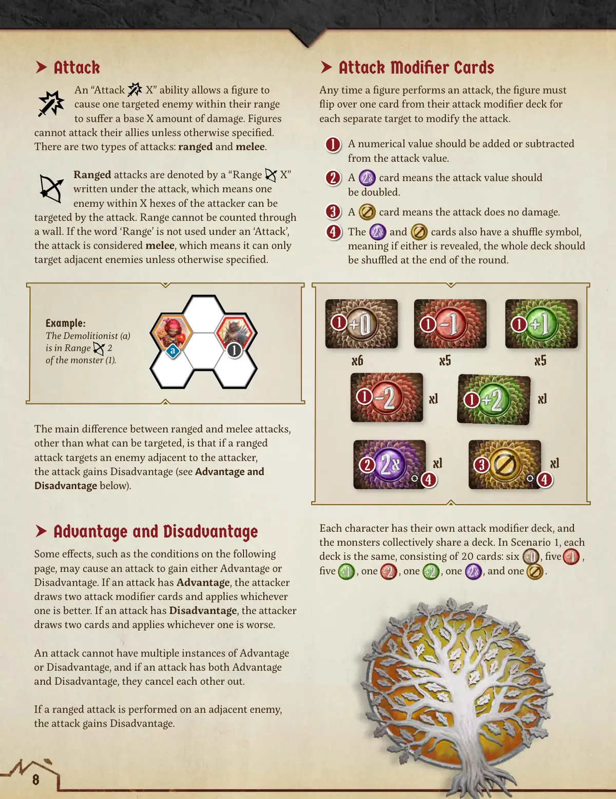
优势与劣势
某些效果，如下一页的条件，可能导致攻击获得优势或劣势。如果攻击具有优势，攻击者需抽取两张攻击修正牌，并应用其中较好的一张。如果攻击具有劣势，攻击者需抽取两张牌，并应用其中较差的一张。
攻击不能拥有多个优势或劣势实例，如果攻击同时具有优势和劣势，它们会相互抵消。
如果对相邻的敌人进行远程攻击，该攻击将获得劣势。
攻击修正牌
每当一个角色执行攻击时，该角色必须从其攻击修正牌库中为每个独立目标翻出一张牌，以修正攻击值。
应在攻击值上加上或减去一个数值。
A 牌表示攻击值应翻倍。
A 牌表示攻击不造成伤害。
A 和 A 牌也有洗牌符号，意味着如果任一张被揭示，整个牌库应在轮结束时被洗牌。
每个角色都有自己的攻击修正牌库，而怪物们共享一个牌库。在场景1中，每个牌库都相同，由20张牌组成：六张 ，五张 ，五张 ，一张 ，一张 ，一张 ，和一张 。
攻击
"攻击 X"能力允许一个角色在其范围内对一个指定敌人造成基础X点伤害。除非另有说明，角色不能攻击其盟友。
有两种类型的攻击：远程攻击和近战攻击。远程攻击在攻击下方标注有"射程 X"，表示攻击者X格范围内的一个敌人可以被该攻击指定。射程不能穿过墙体计算。如果在"攻击"下方没有使用"射程"一词，则该攻击被视为近战攻击，这意味着它只能攻击相邻的敌人，除非另有说明。
远程攻击和近战攻击的主要区别，除了可目标不同外，还在于如果远程攻击的目标与攻击者相邻，该攻击将获得劣势（参见下方的优势与劣势）。
x5
x5
x6
x1
x1
x1
x1
示例：
爆破师(a)
在怪物(1)的射程 2
范围内。
a
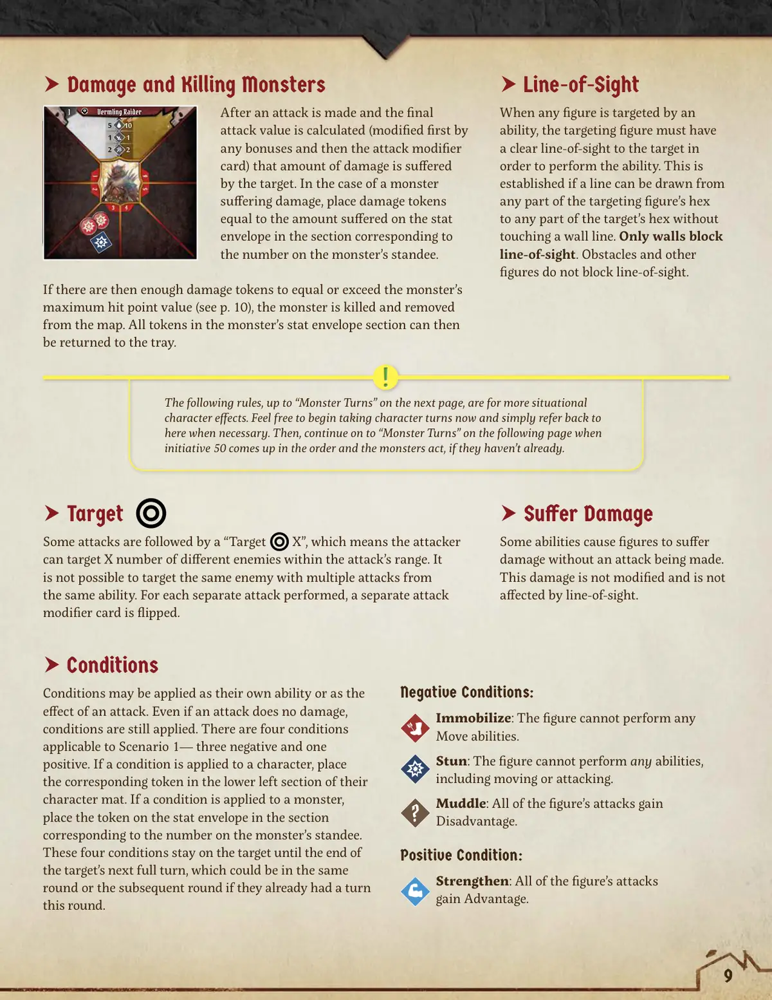
状态
状态可以作为其自身能力或攻击的效果被应用。即使攻击没有造成伤害，状态仍然会被应用。有四种状态适用于场景1——三种负面状态和一种正面状态。如果状态被应用于角色，将相应的指示物放置在其角色版图的左下部分。如果状态被应用于怪物，将指示物放置在怪物立牌上对应数字的统计信封部分。这四种状态会一直留在目标身上，直到目标下一个完整回合结束，如果目标在本回合已经行动过，则可能是在同一回合或下一回合。
负面状态：
定身：该角色无法执行任何移动能力。
眩晕：该角色无法执行任何能力，包括移动或攻击。
混乱：该角色的所有攻击获得劣势。
正面状态：
强化：该角色的所有攻击获得优势。
以下规则，直到下一页的"怪物回合"，都是针对更多情境性的角色效果。您可以现在开始执行角色回合，并在需要时参考此处。然后，当行动顺序中出现50点先攻时，如果怪物尚未行动，请继续到下一页的"怪物回合"。
伤害与消灭怪物
攻击完成后，计算最终攻击值（首先由任何加成修改，然后是攻击牌卡），目标将承受该数量的伤害。如果是怪物承受伤害，将等同于所受伤害数量的伤害指示物放置在怪物立牌上对应数字的统计信封部分。
如果伤害指示物的数量等于或超过怪物的最大生命值（见第10页），则怪物被消灭并从地图上移除。然后可以将怪物统计信封部分中的所有指示物放回托盘。
视线
当任何角色被能力作为目标时，施法角色必须拥有清晰的视线才能执行该能力。如果可以从施法角色六边形的任何部分到目标六边形的任何部分画一条线而不触碰墙壁线，则视为拥有清晰视线。只有墙壁会阻挡视线。障碍物和其他角色不会阻挡视线。
目标
有些攻击后会有"目标 X"，这意味着攻击者可以在攻击范围内选择X个不同的敌人。不能用同一能力的多次攻击攻击同一个敌人。对于每次执行的单独攻击，需要单独翻开一张攻击牌卡。
承受伤害
有些能力会导致角色承受伤害，而没有进行攻击。
此伤害不会被修改，且不受视线影响。
!
维姆林掠夺者
维姆林掠夺者
维姆林掠夺者
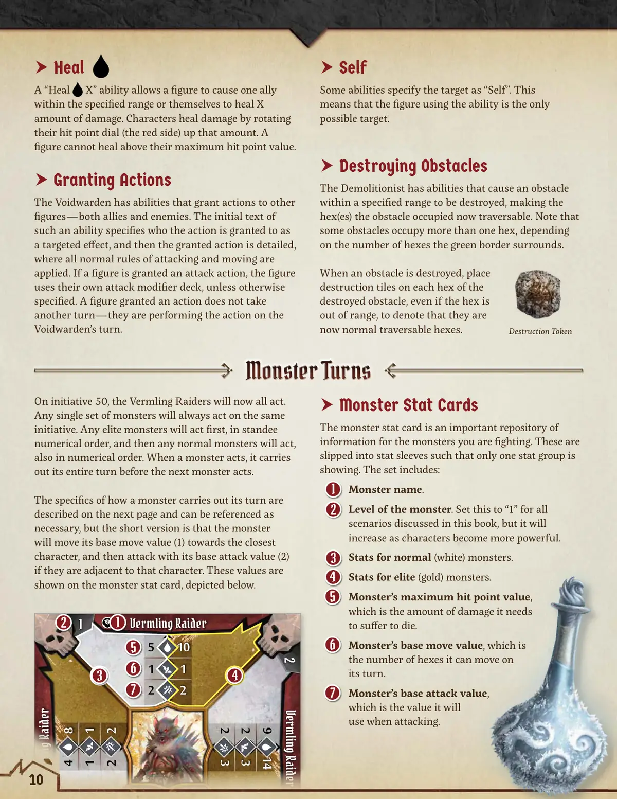
治疗
"治疗 X"能力允许一个角色在指定范围内的一名盟友或他们自己身上治疗X点伤害。角色通过将他们的生命值转盘（红色面）向上旋转该数值来治疗伤害。角色不能治疗超过其最大生命值。
授产行动
虚空守望者(Voidwarden)拥有向其他角色（包括盟友和敌人）授产行动的能力。此类能力的初始文本指定了行动被授予谁，作为一个目标效果，然后详细说明被授予的行动，所有攻击和移动的常规规则都适用。如果一个角色被授予攻击行动，该角色使用自己的攻击修饰牌组，除非另有说明。被授予行动的角色不会进行另一个回合——他们是在虚空守望者的回合上执行该行动。
在先攻50时，蠕突掠夺者(Vermling Raiders)现在将全部行动。任何一组怪物总是在相同的先攻值行动。任何精英怪物将首先行动，按照立牌的数字顺序，然后任何普通怪物行动，也按数字顺序。当一个怪物行动时，它在下一个怪物行动之前完成其整个回合。
怪物如何执行其回合的具体细节在下一页描述，可根据需要参考，但简而言之，怪物将向最近的角色移动其基础移动值（1），然后如果与该角色相邻，则使用其基础攻击值（2）进行攻击。这些数值显示在怪物状态卡上，如下图所示。
怪物状态卡
怪物状态卡是你正在战斗的怪物的重要信息库。这些卡片被插入状态卡套中，以便只显示一个状态组。该套卡包括：
怪物名称。
怪物的等级。本书中讨论的所有场景都设置为"1"，但随着角色变得更强大，它会增加。
普通（白色）怪物的属性。
精英（金色）怪物的属性。
怪物的最大生命值，这是它需要承受的伤害量才能死亡。
怪物的基础移动值，这是它在回合内可以移动的六边形格数。
怪物的基础攻击值，这是它攻击时使用的数值。
破坏障碍
爆破手(Demolitionist)拥有在指定范围内破坏障碍的能力，使障碍占据的六边形格现在可以通行。请注意，一些障碍占据多个六边形格，具体取决于绿色边框包围的六边形格数。当障碍被破坏时，在每个被破坏障碍的六边形格上放置破坏板块，即使该六边形格超出范围，以表示它们现在是普通可通行六边形格。
自身
一些能力将目标指定为"自身"。这
这意味着使用该能力的角色是唯一
可能的目标。
毁灭指示物
怪物回合
怪物回合
怪物回合
蠕虫掠夺者
蠕虫掠
蠕虫掠夺者
蠕虫掠夺者
蠕虫掠夺者
蠕虫掠夺者
蠕虫掠夺者
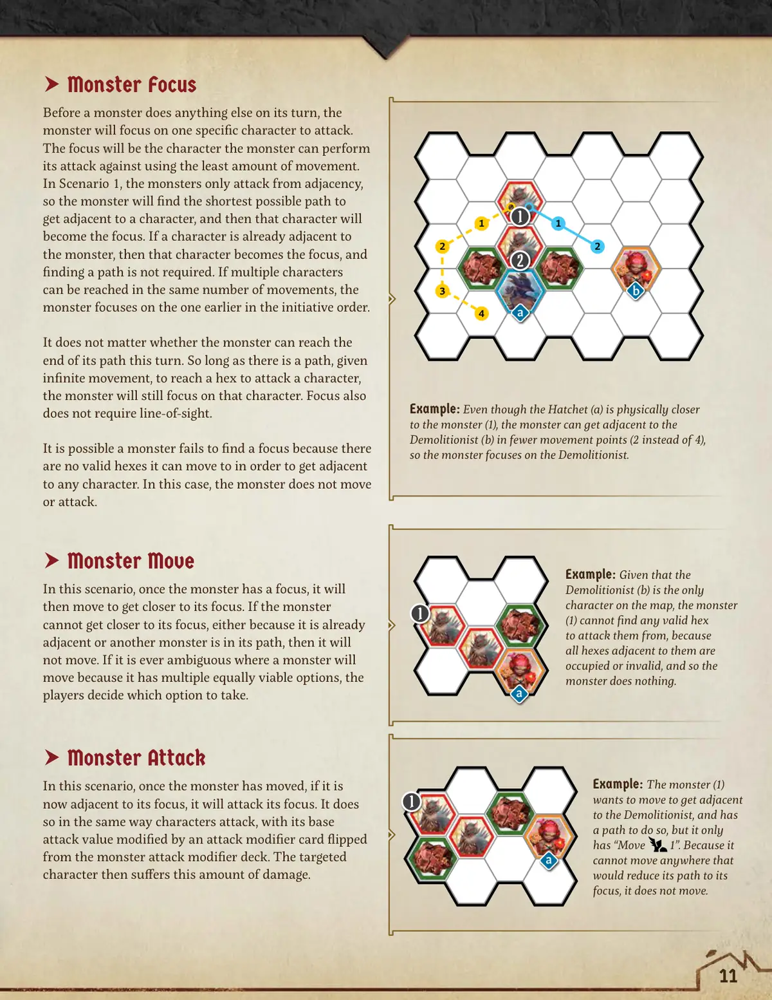
怪物专注
在怪物在其回合做任何其他事情之前，怪物会专注于攻击一个特定角色。
专注将是怪物能用最少移动点数对其执行攻击的角色。
在情景1中，怪物只从相邻位置攻击，因此怪物会找到能到达角色相邻位置的最短路径，然后该角色将成为专注目标。如果一个角色已经与怪物相邻，则该角色成为专注目标，不需要寻找路径。如果有多个角色可以在相同数量的移动点数内到达，怪物会按先攻顺序中靠前的角色作为专注目标。
怪物是否能在本回合到达路径终点并不重要。只要存在一条路径，给予无限移动点数就能到达一个六边形格来攻击角色，怪物仍然会专注于该角色。专注也不需要视线。
怪物可能找不到专注目标，因为没有有效的六边形格可以移动到以接近任何角色。在这种情况下，怪物不移动也不攻击。
怪物移动
在这个情景中，一旦怪物有了专注目标，它就会移动以接近其专注目标。如果怪物无法更接近其专注目标，要么因为它已经相邻，要么有另一个怪物挡在它的路径上，那么它就不会移动。如果怪物有多个同样可行的移动选项，位置不明确，则玩家决定选择哪个选项。
怪物攻击
在这个情景中，一旦怪物移动后，如果它现在与专注目标相邻，它就会攻击其专注目标。它以与角色攻击相同的方式进行，其基础攻击值会受到从怪物攻击修饰牌库中翻出的攻击修饰牌的调整。被锁定的角色会受到此数量的伤害。
示例：尽管斧手(a)在物理上更靠近怪物(1)，但怪物可以用更少的移动点数(2而不是4)到达爆破专家(b)的相邻位置，因此怪物专注于爆破专家。
示例：怪物(1)想要移动到爆破专家的相邻位置，并且有路径可以做到，但它只有"移动 1"。因为它无法移动到任何能缩短到其专注目标路径的位置，所以它不移动。
示例：考虑到爆破专家(b)是地图上唯一的角色，怪物(1)找不到任何有效的六边形格来攻击他们，因为所有相邻的六边形格都被占用或无效，因此怪物什么都不做。
b
a
a
a
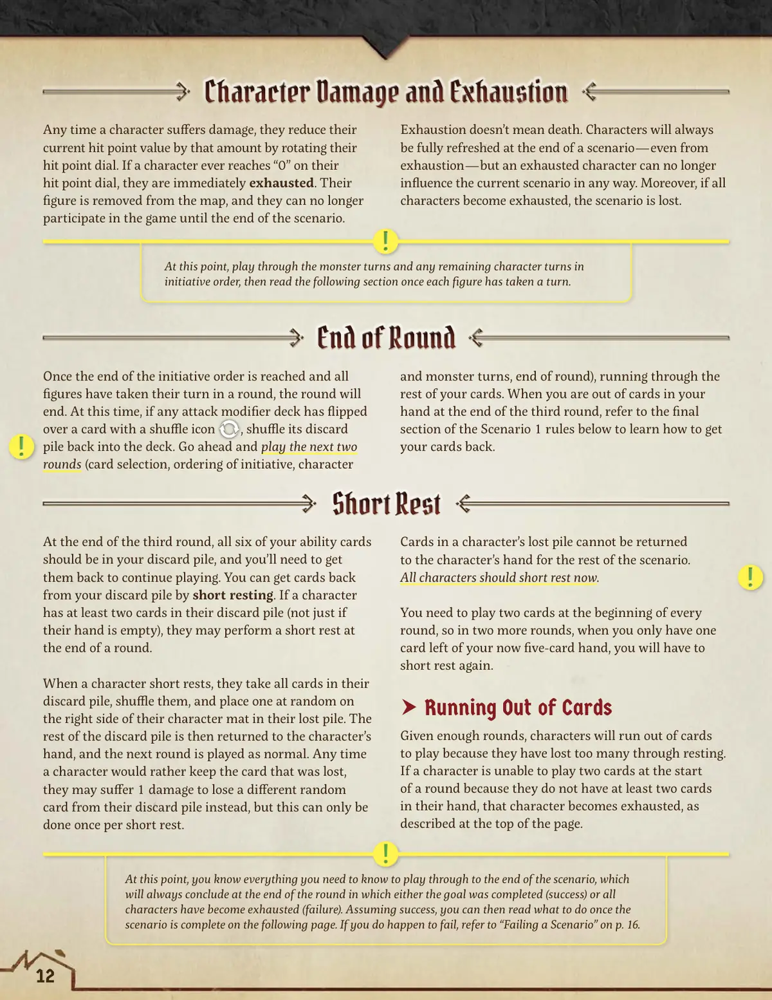
任何时候角色受到伤害，他们通过旋转生命值轮盘来减少其当前生命值数值。如果角色生命值轮盘达到"0"，他们立即进入精疲力竭状态。他们的模型从地图上移除，并且在场景结束前不能再参与游戏。精疲力竭不等于死亡。角色在场景结束时将完全恢复状态——即使是精疲力竭状态——但精疲力竭的角色无法以任何方式影响当前场景。此外，如果所有角色都精疲力竭，则场景失败。
在第三回合结束时，你所有的六张能力卡牌都应在你的弃牌堆中，你需要将它们拿回才能继续游戏。你可以通过短休息从弃牌堆中拿回卡牌。如果一个角色在其弃牌堆中至少有两张卡牌（不仅仅是手牌为空时），他们可以在回合结束时进行短休息。
当角色进行短休息时，他们拿取弃牌堆中的所有卡牌，洗牌，然后随机选择一张放在其角色版图右侧的丢失牌堆中。剩下的弃牌堆则返回角色的手牌，然后正常进行下一回合。任何时候角色宁愿保留被丢失的卡牌，他们可以承受1点伤害来从弃牌堆中随机丢失另一张不同的卡牌，但这每个短休息只能进行一次。
角色丢失牌堆中的卡牌在剩余场景中无法返回角色的手牌。
所有角色现在都应进行短休息。
你需要在每个回合开始时打出两张卡牌，因此在接下来的两个回合中，当你现在五张手牌只剩一张时，你将不得不再次进行短休息。
卡牌用尽
经过足够多的回合，角色会因为通过休息丢失了太多卡牌而无法打出卡牌。如果角色在回合开始时无法打出两张卡牌，因为手牌中至少没有两张卡牌，该角色将如页面顶部所述进入精疲力竭状态。
!
当到达行动顺序的末尾并且所有模型在一个回合中都已完成其回合时，回合将结束。此时，如果任何攻击修饰牌库翻出了一张带有洗牌图标
的卡牌，将其弃牌堆洗回牌库中。继续进行接下来的两个回合（卡牌选择、行动顺序排序、角色和怪物回合、回合结束），打完你剩余的卡牌。当你在第三回合结束时手牌用尽，请参考下方场景1规则的最后一部分，了解如何拿回你的卡牌。
!
此时，你已经掌握了完成整个场景所需的所有知识，场景总是在以下两种情况下结束：目标达成（成功）或所有角色都已耗尽（失败）。假设成功，你可以阅读下一页关于场景完成后该做什么的内容。如果你确实失败了，请参阅第16页的"场景失败"。
此时，按照先攻顺序进行怪物回合和任何剩余的角色回合，然后在每个单位都行动完毕后阅读下一节。
!
!
短暂休息
角色伤害与耗尽
回合结束
短暂休息
短暂休息
角色伤害与耗尽
角色伤害与耗尽
回合结束
回合结束
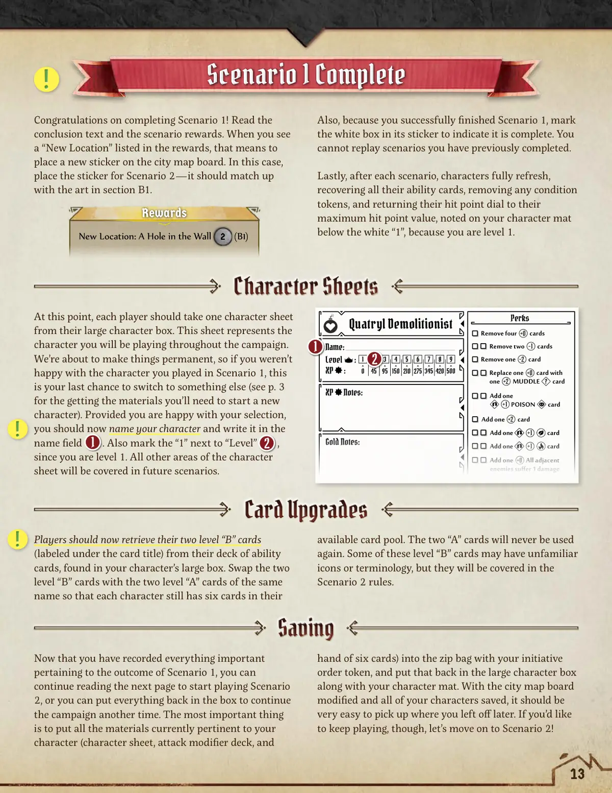
角色表
角色表
角色表
恭喜你完成了场景1！阅读结论文本和场景奖励。当你在奖励中看到"新地点"时，意味着要在城市地图版图上放置一个新的贴纸。在这种情况下，放置场景2的贴纸——它应该与B1部分的图案相匹配。
此外，因为你成功完成了场景1，在其贴纸上标记白色方框以表示它已完成。你不能重玩你已经完成过的场景。
最后，在每个场景结束后，角色会完全恢复，恢复他们所有的能力卡，移除任何状态指示物，并将他们的生命值盘转回其最大生命值，这个数值记录在你的角色垫上白色"1"下方，因为你现在是1级。
此时，每位玩家应从他们的大型角色盒中取出一张角色表。这张表格代表你在整个战役中将要扮演的角色。
我们即将做一些永久性的决定，所以如果你对你在场景1中扮演的角色不满意，这是你最后的机会可以换成其他角色（参见第3页获取开始新角色所需的材料）。如果你对你的选择满意，现在应该为你的角色命名，并将其写在姓名字段中。同时，在"等级"旁边的"1"上做标记，因为你现在是1级。角色表的所有其他区域将在未来的场景中覆盖。
!
玩家现在应从他们能力卡牌库中取出两张等级"B"卡（在卡牌标题下标注），这些卡牌放在你角色的大型盒子里。将这两张等级"B"卡与同名的两张等级"A"卡交换，这样每个角色仍然有六张卡牌在他们可用的卡池中。这两张"A"卡将不再被使用。这些等级"B"卡中的一些可能有不熟悉的图标或术语，但它们将在场景2的规则中解释。
!
现在你已经记录了与场景1结果相关的所有重要信息，你可以继续阅读下一页开始玩场景2，或者把所有东西放回盒子中，以便稍后继续战役。最重要的是将所有与你角色当前相关的材料（角色表、攻击修正牌库和六张手牌）与你的行动顺序指示物一起放入密封袋中，然后连同你的角色垫一起放回大型角色盒中。城市地图版图已修改，所有你的角色都已保存，这样以后很容易从你停下的地方继续。不过，如果你想继续玩，让我们进入场景2吧！
场景1完成
场景1完成
卡牌升级
保存
卡牌升级
卡牌升级
保存
保存
!
增加一个
所有相邻的敌人受到1点伤害
d
添加一张牌
添加一张牌
添加一张牌
添加一张牌
毒药
牌
用一张
混乱
牌替换一张牌
移除一张牌
移除两张牌
移除四张牌
夸垂尔爆破手
奖励
新地点：墙上的洞2 (B1)
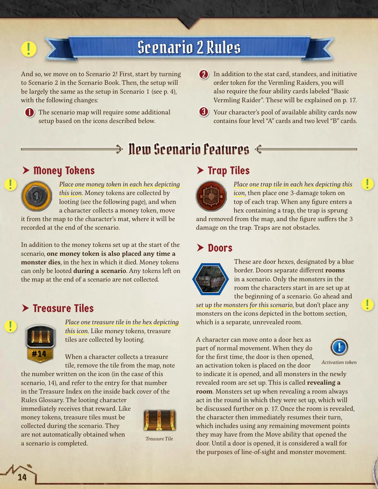
因此，我们继续进行场景2！首先，翻到场景书中的场景2。然后，设置将与场景1的设置基本相同（见第4页），但有以下变化：
场景地图将需要根据下面描述的图标进行一些额外设置。
除了蠕虫掠夺者的状态卡、立牌和行动顺序标记外，你还需要四张标记为"基础蠕虫掠夺者"的能力卡。这些将在第17页解释。
你角色可用的能力牌池现在包含四张等级"A"的牌和两张等级"B"的牌。
金钱标记
在每个描绘此图形的六边形中放置一个金钱标记。金钱标记通过掠夺获得（见下一页），当角色收集金钱标记时，将其从地图移到角色的垫子上，在场景结束时记录。
除了在场景开始时设置的金钱标记外，每当一个怪物死亡时，也在其死亡的六边形中放置一个金钱标记。金钱标记只能在场景期间掠夺。任何在场景结束时留在地图上的标记都不会被收集。
宝藏板块
在每个描绘此图标的六边形中放置一个宝藏板块。与金钱标记类似，宝藏板块通过掠夺获得。
当角色收集宝藏板块时，从地图上移除该板块，记下图标上写的数字（在本场景中为14），然后参考规则术语表封底宝藏索引中该数字的条目。掠夺角色立即获得该奖励。与金钱标记一样，宝藏板块必须在场景期间收集。它们不会在场景完成时自动获得。
#14
陷阱板块
在每个描绘此图标的六边形中放置一个陷阱板块，然后在每个陷阱上放置一个3点伤害标记。当任何角色进入包含陷阱的六边形时，陷阱被触发并从地图上移除，该角色受到陷阱上的3点伤害。陷阱不是障碍物。
门
这些是门六边形，由蓝色边框指定。门将场景中的不同房间分隔开。只有在角色起始房间中的怪物才在场景开始时设置。继续设置本场景的怪物，但不要将任何怪物放置在底部部分描绘的图标上，那是一个独立的、未揭示的房间。
角色可以作为正常移动的一部分移动到门六边形。当他们第一次这样做时，门就被打开，一个激活标记被放在门上表示它已打开，并且新揭示房间中的所有怪物都被设置。这称为揭示房间。在揭示房间时设置的怪物总是在它们被设置的回合行动，这将是
将在第17页进一步讨论。一旦房间被揭示，
角色立即继续他们的回合，
包括使用任何从开门的移动能力中可能剩余的移动点。
在门被打开之前，出于视线和怪物移动的目的，
它被视为一堵墙。
场景2规则
场景2规则
激活指示物
新场景特性
新场景特性
新场景特性
!
!
!
!
!
宝藏板块
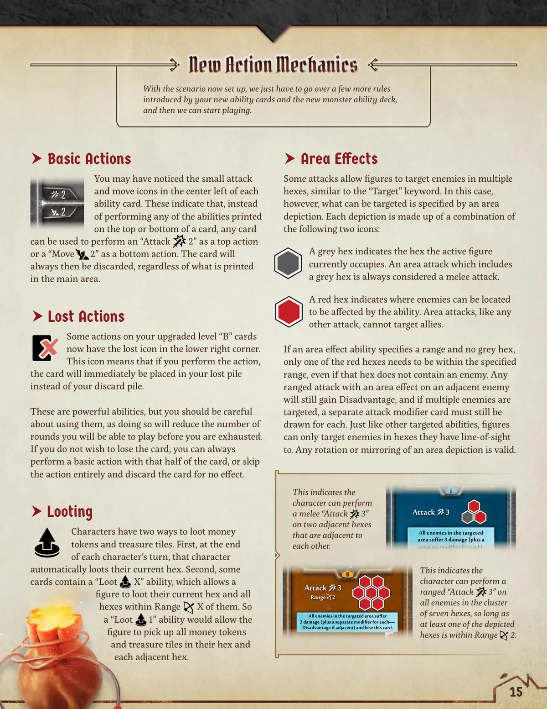
新的行动机制
新的行动机制
新的行动机制
失行动作
你升级后的"B"级卡牌上的某些动作现在在右下角有失行动作图标。
这个图标的意思是，如果你执行这个动作，这张牌将被立即放入你的失行动作堆，而不是你的弃牌堆。
这些是强大的能力，但你应该谨慎使用它们，因为这样做会减少你在耗尽前能够进行的回合数。
如果你不想失去这张牌，你总是可以用卡牌的那一半执行基础动作，或者完全跳过这个动作，弃掉这张牌且不产生任何效果。
掠夺
角色有两种方式掠夺金钱指示物和宝藏板块。首先，在每个角色回合结束时，该角色会自动掠夺其当前所在的六边形。其次，一些卡牌包含"掠夺 X"能力，它允许一个角色掠夺其当前所在的六边形以及他们范围内所有六边形内的物品。因此，"掠夺 1"能力将允许角色拾取其所在六边形和每个相邻六边形中的所有金钱指示物和宝藏板块。
区域效果
一些攻击允许角色针对多个六边形中的敌人，类似于"目标"关键词。然而，在这种情况下，可以 targeting 的内容由区域图示指定。每个图示由以下两个图标的组合构成：
灰色六边形表示当前角色占据的六边形。包含灰色六边形的区域攻击总是被视为近战攻击。
红色六边形表示敌人可以位于的位置以被该能力影响。区域攻击与其他任何攻击一样，不能 targeting 同盟。
如果一个区域效果能力指定了范围但没有灰色六边形，只需要一个红色六边形在指定范围内即可，即使该六边形中没有敌人。对相邻敌人进行的任何带有区域效果的远程攻击仍将获得劣势，并且如果 targeting 多个敌人，仍必须为每个敌人单独抽取攻击修正卡。就像其他 targeting 能力一样，角色只能 targeting 他们有视线范围内的六边形中的敌人。区域图示的任何旋转或镜像都是有效的。
这表示角色可以对七边形集群中的所有敌人执行远程"攻击 3"，只要至少一个描绘的六边形在范围内 2 内。
这表示角色可以对两个相邻的六边形执行近战"攻击 3"，这两个六边形彼此相邻。
基础动作
你可能已经注意到每张能力卡牌左中心的小型攻击和移动图标。这些图标表示，可以不执行卡牌顶部或底部印刷的任何能力，任何卡牌都可以用来执行"攻击 2"作为上半部分动作，或"移动 2"作为下半部分动作。这张牌将
总是被弃置，无论主区域印有什么内容。
随着场景现已设置，我们只需要回顾一下由你的新能力卡牌和新怪物能力牌库引入的几条额外规则，然后我们就可以开始游戏了。
攻击 3
射程 2
目标区域内的所有敌人受到
3点伤害（每个敌人还有单独的调整值—
相邻时处于劣势）并失去这张卡牌。
B
大爆炸
目标区域内的所有敌人受到
3点伤害（每个敌人还有单独的调整值）。
攻击 3
B
近身斩击
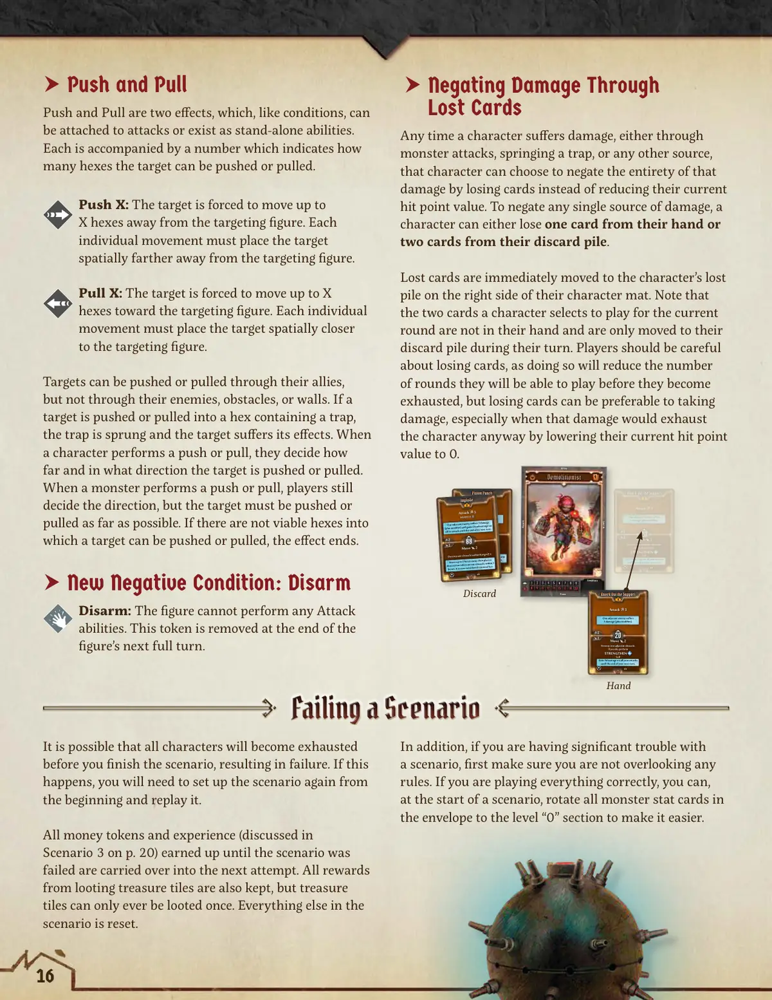
推和拉
推和拉是两种效果，它们可以像条件一样附加到攻击上，或者作为独立能力存在。
每种效果都附带一个数字，表示目标可以被推或拉多少个六边形格。
推X：目标被迫移动最多X个六边形格，远离目标角色。每次移动都必须使目标在空间上远离目标角色。
拉X：目标被迫移动最多X个六边形格，朝向目标角色。每次移动都必须使目标在空间上靠近目标角色。
目标可以通过其盟友被推或拉，但不能通过其敌人、障碍物或墙壁。如果目标被推或拉到包含陷阱的六边形格中，陷阱会被触发，目标将遭受其效果。当角色执行推或拉时，他们决定目标被推或拉多远以及朝向哪个方向。当怪物执行推或拉时，玩家仍然决定方向，但目标必须被尽可能远地推或拉。如果没有可行的六边形格可以让目标被推或拉，效果结束。
新的负面条件：缴械
缴械：该角色无法执行任何攻击能力。此指示物在该角色的下一个完整回合结束时被移除。
通过失去卡牌来抵消伤害
任何时候角色遭受伤害，无论是通过怪物攻击、触发陷阱还是任何其他来源，该角色可以选择通过失去卡牌来抵消全部伤害，而不是减少其当前生命点值。要抵消任何单一来源的伤害，角色可以失去一张手牌或两张弃牌堆中的卡牌。
失去的卡牌立即被移动到角色角色垫右侧的失去牌堆中。请注意，角色为当前回合选择的两张卡牌不在其手牌中，并且只在其回合期间被移动到其弃牌堆中。玩家应谨慎地失去卡牌，因为这会减少他们在角色耗尽前能够进行的回合数，但失去卡牌可能比承受伤害更可取，特别是当该伤害通过将当前生命点值降至0而无论如何都会使角色耗尽时。
有可能在完成场景前所有角色都会耗尽，导致失败。如果发生这种情况，您需要从头开始重新设置场景并重玩。
直到场景失败前获得的所有金钱指示物和经验（在第20页的场景3中讨论）都会被带入下一次尝试中。从掠夺宝藏板块获得的所有奖励也予以保留，但宝藏板块只能被掠夺一次。场景中的其他所有内容都会被重置。
此外，如果你在某个场景中遇到严重困难，首先确保你没有忽略任何规则。如果你正确地执行了所有规则，你可以在场景开始时，将信封中的所有怪物状态卡旋转到"0"等级部分，以使游戏变得更容易。
失败场景
失败场景
失败场景
激活状态
弃置
失落物品
眩晕
目标：一个相邻敌人
一个相邻敌人在其下一个回合结束前无法执行任何行动。
攻击 3
一个相邻敌人受到3点伤害（加上修正值）。
A
活塞拳击
移动 2
摧毁一个距离3范围内的障碍物。
移动最多2个六边形距离，然后在3个六边形范围内对一个障碍物放置一个毁灭标记。它现在被视为一个普通六边形。
攻击 3
迷惑
一个相邻敌人受到3点伤害（加上修正值）并在其下一个回合结束前所有攻击获得劣势。
A
内爆
移动 2
摧毁一个相邻的障碍物。
如果你这样做，执行
强化
自身
攻击 3
一个相邻敌人受到3点伤害（加上修正值）。
直到你的下一个回合结束，你所有攻击获得优势。
A
击倒支援
移动 2
摧毁一个相邻的障碍物。
如果你这样做，执行
强化
自身
攻击 3
一个相邻敌人受到3点伤害（加上修正值）。
直到你的下一个回合结束，你所有攻击获得优势。
A
击倒支援
手牌
弃置
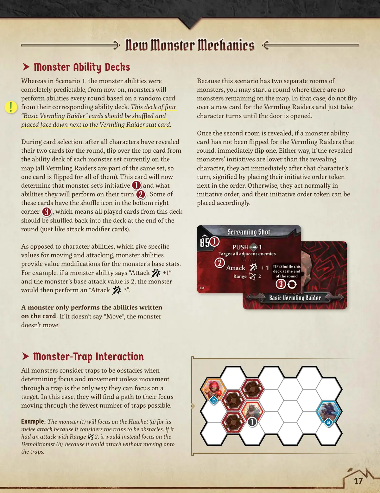
b
a
怪物与陷阱互动
在确定焦点和移动时，所有怪物都将陷阱视为障碍，除非穿过陷阱是它们能够聚焦于目标的唯一方式。在这种情况下，它们会选择穿过尽可能少的陷阱的路径到达其焦点。
示例：怪物(1)会聚焦于斧头(a)进行近战攻击，因为它将陷阱视为障碍。如果它有一个射程为2的攻击，它则会聚焦于爆破专家(b)，因为它可以在不移动到陷阱上的情况下进行攻击。
怪物能力牌组
在场景1中，怪物能力是完全可预测的，从现在开始，怪物将根据其对应能力牌组中随机抽取的卡牌每轮执行能力。这套四张"基础蠕虫掠夺者"卡牌应洗牌并面朝下放置在蠕虫掠夺者状态卡旁边。
在选牌阶段，当所有角色都展示了他们本轮的两张牌后，翻转当前在地图上的每个怪物牌组顶部的卡牌（所有蠕虫掠夺者属于同一组，因此为它们翻转一张卡牌）。这张卡牌将决定该怪物组的先攻顺序以及它们在自己的回合执行什么能力。其中一些卡牌在右下角有洗牌图标，这意味着在本轮结束时，所有从该牌组打出的卡牌都应洗回牌组中（就像攻击修饰卡牌一样）。
与角色能力不同，角色能力为移动和攻击提供具体数值，怪物能力则为怪物的基础属性提供数值修改。例如，如果怪物能力显示"攻击+1"，而怪物的基础攻击值为2，那么怪物将执行"攻击3"。
怪物只执行卡牌上写的能力。如果卡牌上没有写"移动"，怪物就不会移动！
由于本场景有两个独立的怪物房间，你可能会开始一个轮次，此时地图上没有怪物剩余。在这种情况下，不要为蠕虫掠夺者翻转新卡牌，只需继续进行角色回合直到门被打开。
当第二个房间被揭示后，如果该轮次尚未为蠕虫掠夺者翻转能力卡牌，立即翻转一张。无论哪种情况，如果被揭示的怪物的先攻顺序低于揭示角色的先攻顺序，它们在该角色回合后立即行动，通过将它们的先攻顺序指示物放在顺序中的下一个位置来表示。否则，它们按正常的先攻顺序行动，并且可以相应地放置它们的先攻顺序指示物。
新怪物机制
新怪物机制
新怪物机制
!
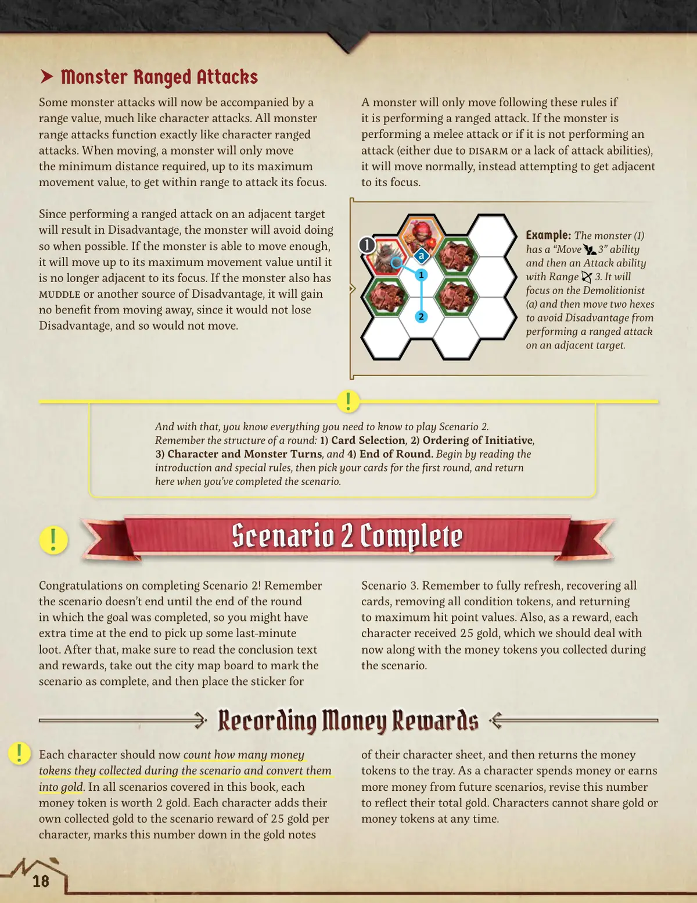
恭喜你完成了场景2！请记住，场景直到完成目标的那个回合结束时才会结束，因此你可能在最后有一些额外的时间来拾取一些最后的战利品。之后，请务必阅读结局文本和奖励，取出城市地图版图将场景标记为已完成，然后放置场景3的贴纸。记得完全重置，恢复所有卡牌，移除所有状态指示物，并将生命值恢复到最大值。另外，作为奖励，每个角色获得了25金币，我们应该现在连同你在场景中收集到的金币指示物一起处理这些金币。
现在每个角色应该计算他们在场景中收集了多少金币指示物，并将其转换为金币。在本书涵盖的所有场景中，每个金币指示物价值2金币。每个角色将自己收集的金币加上每个角色25金币的场景奖励，将这个总数记录在角色表的金币记录中，然后将金币指示物放回托盘。当角色花费金币或从未来场景中获得更多金币时，请更新这个数字以反映他们的总金币。任何时候角色都不能共享金币或金币指示物。
怪物远程攻击
一些怪物攻击现在会附带一个射程值，就像角色攻击一样。所有怪物远程攻击的功能与角色远程攻击完全相同。移动时，怪物只会移动所需的最小距离，最多不超过其最大移动值，以进入攻击其目标的射程范围内。由于对相邻目标进行远程攻击会导致劣势，怪物会在可能的情况下避免这样做。如果怪物能够移动足够的距离，它会移动到最大移动值，直到不再与其目标相邻。如果怪物也有混乱或其他劣势来源，它不会从远离中获益，因为它不会失去劣势，因此不会移动。
怪物只有在执行远程攻击时才会遵循这些规则移动。如果怪物执行近战攻击，或者由于缴械或缺乏攻击能力而没有执行攻击，它会正常移动，尝试与其目标相邻。
场景2完成
场景2完成
示例：怪物(1)拥有"移动3"能力，然后是一个射程3的攻击能力。它将专注于爆破专家(a)，然后移动两个六边形以避免对相邻目标进行远程攻击导致的劣势。
至此，你已经知道了玩场景2所需的一切。请记住一个回合的结构：1)卡牌选择，2)行动顺序排列，3)角色和怪物回合，以及4)回合结束。从阅读开始。
介绍和特殊规则，然后为第一轮选择你的卡牌，完成场景后返回此处。
记录金钱奖励
记录金钱奖励
记录金钱奖励
!
!
!
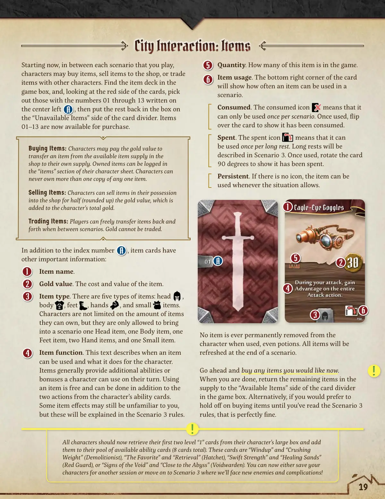
城市互动：物品
从现在开始，在您玩的每个场景之间，角色可以购买物品、将物品出售给商店，或与其他角色交易物品。在游戏盒中找到物品牌库，查看卡牌的红色面，选出中心左侧写有数字01至13的卡牌，然后将其余卡牌放回盒子中的卡牌分隔物的"不可用物品"一侧。物品01-13现在可以购买。
除了索引编号 外，物品卡牌还有其他重要信息：
物品名称。
金币价值。物品的成本和价值。
物品类型。有五种类型的物品：头部 、身体 、脚部 、手部 和小型 物品。
角色拥有的物品数量不受限制，但他们只能在一个场景中带入一件头部物品、一件身体物品、一件脚部物品、两件手部物品和一件小型物品。
物品功能。这段文字描述了物品何时可以使用以及它为角色做什么。
物品通常提供角色可以在自己回合使用的额外能力或奖励。使用物品是免费的，并且可以额外使用角色能力卡上的两个行动。
一些物品效果可能您仍然不熟悉，但这些将在场景3规则中解释。
数量。游戏中该物品的数量。
物品使用。卡牌的右下角将显示物品在一个场景中可以使用多少次。
消耗。消耗图标 表示它每个场景只能使用一次。使用后，翻转卡牌以显示已被消耗。
使用。使用图标 表示它每次长休息可以使用一次。长休息将在场景3中描述。使用后，将卡牌旋转90度以显示已被使用。
持久。如果没有图标，物品可以在情况允许时随时使用。
没有任何物品在使用时会被角色永久移除，即使是药水。所有物品将在场景结束时刷新。
现在请购买您想要的任何物品。完成后，将供应中剩余的物品放回游戏盒中的卡牌分隔物的"可用物品"一侧。或者，如果您宁愿等到阅读完场景3规则后再购买物品，那完全可以。
A
A
所有角色现在应从他们角色的大盒子中取出他们最初的两张"1级"卡牌，并将它们添加到他们可用的能力牌池中（总共8张卡牌）。这些卡牌是"发条"和"重压"（爆破专家）、"最爱"和"回收"（斧头）、"迅捷之力"和"治愈之沙"（红卫），或"虚空之兆"和"深渊之近"（虚空守卫）。您现在可以保存您的
<!--page:N-->
城市互动：物品
购买物品：角色可以支付金币价值，将商店中可用物品供应区的物品转移到自己的供应区。拥有的物品可以记录在其角色表的"物品"部分。角色永远不能拥有同一物品的多份副本。
出售物品：角色可以将自己拥有的物品出售给商店，获得其金币价值的一半（向上取整），该金额将添加到角色的总金币中。
交易物品：玩家可以在场景之间自由地来回转移物品。金币不能被交易。
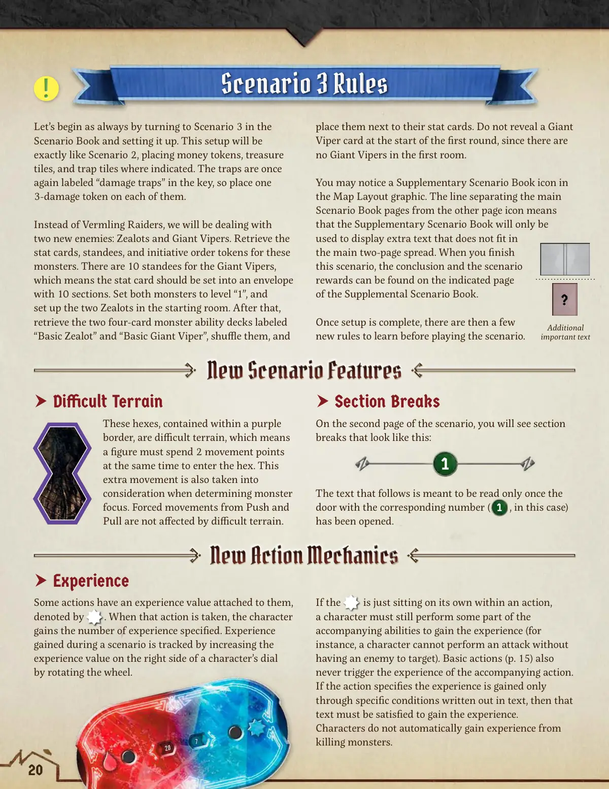
经验值
某些行动带有经验值，用
表示。当执行该行动时，角色获得指定的经验值数量。在场景中获得的通过旋转轮盘来增加角色转盘右侧的经验值来追踪。
如果
单独存在于一个行动中，角色仍必须执行相关能力的一部分才能获得经验值（例如，角色不能在没有敌人可攻击的情况下执行攻击）。基础行动（第15页）也永远不会触发相关行动的经验值。
如果行动指定经验值只能通过文本中写出的特定条件获得，则必须满足这些文本条件才能获得经验值。
角色不会通过杀死怪物自动获得经验值。
让我们像往常一样，翻开场景书中的场景3并进行设置。这个设置将与场景2完全相同，按照指示放置金钱指示物、宝藏板块和陷阱板块。陷阱在图例中再次标记为"伤害陷阱"，因此在每个陷阱上放置一个3点伤害指示物。
我们将不再处理蠕族掠夺者，而是面对两个新的敌人：狂热者和巨型蝰蛇。取出这些怪物的状态卡、立牌和行动顺序指示物。巨型蝰蛇有10个立牌，这意味着状态卡应设置为包含10个部分的信封。将两个怪物的等级设置为"1"，并在起始房间中设置两个狂热者。之后，取出标记为"基础狂热者"和"基础巨型蝰蛇"的两张四张怪物能力牌组，洗牌后放在它们的状态卡旁边。不要在第一轮开始时揭示巨型蝰蛇牌，因为第一个房间中没有巨型蝰蛇。
您可能会在地图布局图形中看到一个补充场景书图标。将主场景书页面与其他页面图标分开的线条意味着补充场景书仅用于显示不适合在主双页跨页中显示的额外文本。当您完成这个场景时，结论和场景奖励可以在补充场景书的指定页面上找到。
设置完成后，在开始游戏场景前需要学习几个新规则。
难以地形
这些紫色边框内的六边形是难以地形，这意味着一个角色必须同时花费2点移动点数才能进入该六边形。在确定怪物专注时，这额外的移动也被考虑在内。来自推动和拉动的强制移动不受难以地形的影响。
分节符
在场景的第二页，您会看到看起来像这样的分节符：
场景3规则
以下内容应在打开相应编号的门（本例中为3）后阅读。
新行动机制
新行动机制
新行动机制
新场景特性
新场景特性
新场景特性
!
附加重要文本
?
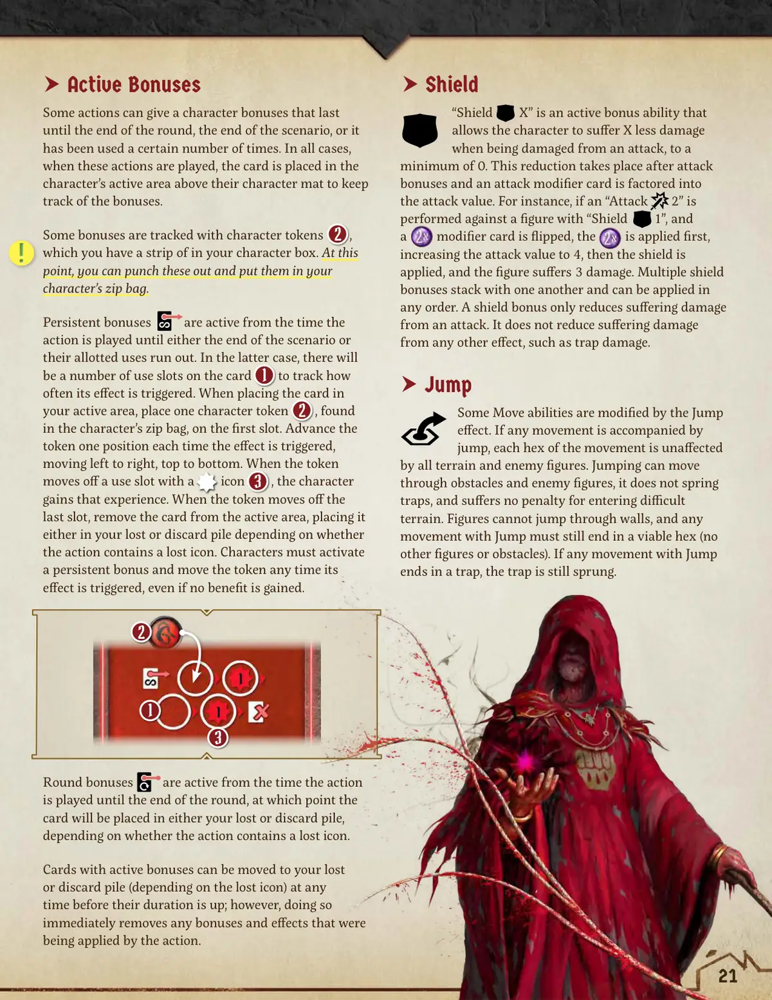
激活奖励
有些行动可以为角色提供奖励，这些奖励持续到回合结束、场景结束，或被使用了一定次数。在所有情况下，当这些行动被使用时，卡牌会被放置在角色角色垫上方的激活区域，以跟踪这些奖励。
有些奖励使用角色指示物 2 进行跟踪，你的角色盒中有一排这些指示物。此时，你可以将这些指示物打孔并放入角色的拉链袋中。
持久奖励 从行动被使用时开始激活，直到场景结束或其分配的使用次数用完。在后一种情况下，卡牌上会有一定数量的使用槽位 来跟踪其效果被触发的频率。当将卡牌放入激活区域时，将一个角色指示物 （在角色的拉链袋中）放在第一个槽位上。每次效果被触发时，将指示物向左向右、从上到下移动一个位置。当指示物移出带有 图标 的使用槽位时，角色获得该经验。当指示物移出最后一个槽位时，将卡牌从激活区域移除，根据行动是否包含丢失图标，将其放入你的丢失堆或弃牌堆。角色必须激活持久奖励并在效果被触发时移动指示物，即使没有获得任何好处。
回合奖励 从行动被使用时开始激活，直到回合结束，届时卡牌将根据行动是否包含丢失图标，放入你的丢失堆或弃牌堆。带有激活奖励的卡牌可以在其持续时间结束前的任何时候移至你的丢失堆或弃牌堆（取决于丢失图标）；然而，这样做会立即移除该行动正在应用的任何奖励和效果。
!
护盾
"护盾 X"是一种激活奖励能力，允许角色在受到攻击伤害时减少X点伤害，最低为0。此减少发生在攻击奖励和攻击修饰卡牌被计入攻击值之后。例如，如果一个"攻击 2"对具有"护盾 1"的单位执行，并且翻出了一张 修饰卡牌，则 效果首先应用，将攻击值增加到4，然后护盾效果应用，单位受到3点伤害。多个护盾奖励可以相互叠加，可以按任何顺序应用。护盾奖励仅减少来自攻击的伤害。它不减少来自任何其他效果（如陷阱伤害）造成的伤害。
跳跃
一些移动能力被跳跃效果修改。如果任何移动伴随着跳跃，移动的每个六边形都不受所有地形和敌方单位的影响。跳跃可以移动
穿过障碍物和敌方棋子，它不会触发陷阱，并且进入困难地形不会受到任何惩罚。棋子不能跳过墙壁，任何带有跳跃的移动仍必须在一个可行的六边形格内结束（不能有其他棋子或障碍物）。如果任何带有跳跃的移动结束在陷阱上，陷阱仍然会被触发。
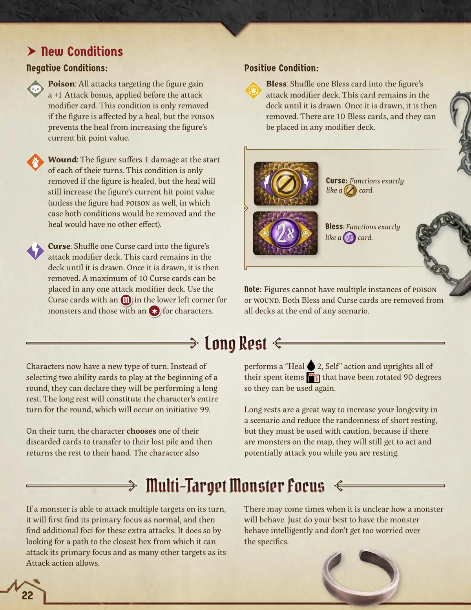
新状态
负面状态：
中毒：针对该角色的所有攻击获得+1攻击加值，在攻击修正卡牌前应用。此状态只有在角色受到治疗时才会被移除，但中毒会阻止治疗增加角色的当前生命值。
创伤：角色在每个回合开始时受到1点伤害。此状态只有在角色被治疗时才会被移除，但治疗仍会增加角色的当前生命值（除非角色同时也有中毒，在这种情况下，两种状态都会被移除，且治疗不会有其他效果）。
诅咒：将一张诅咒牌洗入角色的攻击修正牌库。这张牌会留在牌库中，直到被抽到。一旦被抽到，就会被移除。任何一张攻击修正牌库中最多可放置10张诅咒牌。使用左下角有m的诅咒牌用于怪物，使用左下角有*的诅咒牌用于角色。
正面状态：
祝福：将一张祝福牌洗入角色的攻击修正牌库。这张牌会留在牌库中，直到被抽到。一旦被抽到，就会被移除。共有10张祝福牌，它们可以放置在任何修正牌库中。
角色现在有一种新的回合类型。他们可以在一轮开始时选择两张能力牌进行游戏，也可以声明他们将进行长时间休息。长时间休息将构成角色整轮的回合，将在先攻99时进行。
在他们的回合中，角色选择一张他们弃置的牌转移到其丢失牌堆，然后将其余牌返回到手牌。角色还会执行"治疗2，自身"行动，并将所有已旋转90度的已使用物品恢复直立状态，以便再次使用。
长时间休息是在场景中增加生存能力和减少短休息随机性的好方法，但必须谨慎使用，因为如果地图上有怪物，它们仍然会行动，并可能在你休息时攻击你。
祝福：功能与一张牌完全相同。
诅咒：功能与一张牌完全相同。
如果怪物在其回合能够攻击多个目标，它会首先像往常一样找到其主要焦点，然后为这些额外攻击找到其他焦点。它会通过寻找一条路径到最近的六边形格来实现这一点，从那里它可以攻击其主要焦点以及其攻击行动允许的尽可能多的其他目标。
有时可能会出现怪物行为不明确的情况。只需尽力让怪物表现得智能一些，不必过于担心具体细节。
注意：角色不能同时拥有多个中毒或创伤状态。祝福牌和诅咒牌在任何场景结束时都会从所有牌库中移除。
长时间休息
Multi-Target Monster Focus
Long Rest
Long Rest
Multi-Target Monster Focus
Multi-Target Monster Focus
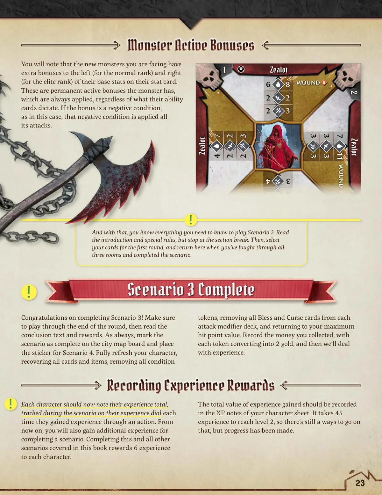
恭喜你完成了场景3！确保玩完这一轮的剩余部分，然后阅读结局文本和奖励。一如既往，在城市地图版图上将场景标记为已完成，并为场景4贴上贴纸。完全刷新你的角色，恢复所有卡牌和物品，移除所有状态指示物，从每个攻击修饰牌库中移除所有祝福和诅咒牌，并恢复到你的最大生命点值。记录你收集到的金钱，每个指示物转换为2金币，然后我们将处理经验值。
每个角色现在应该记录他们的经验值总数，在场景中每次通过行动获得经验时，都在他们的经验盘上追踪。从现在起，你还将因完成场景而获得额外经验值。完成本书涵盖的本场景和所有其他场景，每个角色将获得6点经验值。
获得的经验值总值应记录在你的角色表的备注中。达到2级需要45点经验值，所以在这方面还有很长的路要走，但已经取得了进展。
你会注意到，你面对的新怪物在其状态卡上，基础数值的左侧（普通等级）和右侧（精英等级）有额外的加成。这是怪物拥有的永久主动加成，无论其能力牌如何指示，这些加成都会始终应用。如果加成是负面状态，如本例所示，该负面状态会应用于它的所有攻击。
至此，你已经掌握了玩场景3所需的所有知识。阅读介绍和特殊规则，但在章节分隔处停止。然后，为第一轮选择你的卡牌，当你打完所有三个房间并完成场景后，返回这里。
!
场景3已完成
场景3已完成
怪物主动加成
记录经验值奖励
怪物主动加成
怪物主动加成
记录经验值奖励
记录经验值奖励
!
!
伤口
狂热者
狂热者
狂热者
伤口
伤口
狂热者
狂热者
狂热者
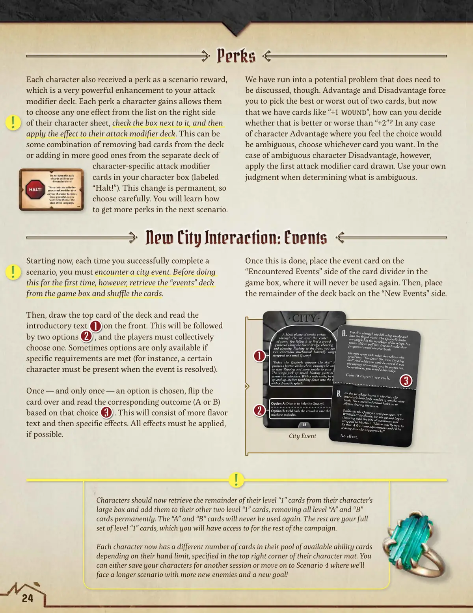
从现在开始，每次你成功完成一个场景，你必须遭遇一个城市事件。但在第一次这样做之前，请从游戏盒中取出"事件"牌库并洗牌。
然后，抽取牌库顶部的卡牌，阅读正面的介绍文本。接下来会有两个选项，玩家必须集体选择一个。有时，只有满足特定要求时选项才可用（例如，在解决事件时必须有特定角色在场）。
一旦（且仅一次）选择了一个选项，将卡牌翻过来，根据该选择阅读相应的结果（A或B）。这将包含更多风味文本，然后是具体效果。如果可能，必须应用所有效果。
完成后，将事件卡牌放在游戏盒中卡牌分隔器的"已遭遇事件"一侧，它将永远不会再次使用。然后将剩余的牌库放回"新事件"一侧。
角色现在应从其角色的大盒子中取回其余的等级"1"卡牌，并将它们添加到他们另外两张等级"1"卡牌中，永久移除所有等级"A"和"B"卡牌。"A"和"B"卡牌将永远不会再次使用。其余的是你完整的等级"1"卡牌集合，在战役的剩余时间里你都可以使用它们。
现在，每个角色在其可用能力卡牌池中的卡牌数量不同，这取决于其手牌上限，该数值指定在其角色版图的右上角。你可以将你的角色留待下一次游戏，或者继续进行场景4，在那里我们将面对一个更长的场景，有更多新敌人和新目标！
!
城市事件
每个角色还获得了场景奖励，即一个作为攻击修正牌库的强大增强。角色获得的每个特技允许他们从角色版面右侧的列表中选择任意一个效果，勾选其旁边的方框，然后将该效果应用到其攻击修正牌库中。这可能包括从牌库中移除坏牌，或者从角色盒子中单独的角色特定攻击修正牌库（标记为"Halt!"）添加更多好牌的组合。这种改变是永久性的，因此请谨慎选择。你将在下一个场景中学习如何获得更多特技。
不过，我们遇到了一个需要讨论的潜在问题。优势和劣势迫使你在两张牌中选择最好或最差的一张，但现在我们有了像"+1伤口"这样的卡牌，你如何判断它比"+2"更好还是更差？在任何你认为选择会模糊不清的角色优势情况下，你可以选择任意一张你想要的牌。然而，在模糊不清的角色劣势情况下，
应用抽到的第一张攻击修正牌。在确定有歧义的地方使用你自己的判断。
特长
特长
特长
新城市互动：事件
新城市互动：事件
新城市互动：事件
！
！
一股黑色的烟柱在小镇中心上空盘旋。你跟随它来到寂静桥(SIlent Bridge)边，发现一群人聚集在那里，欢呼鼓掌。挤到前面，你看到两只巨大的机械蝴蝶翅膀绑在一个小型Quatryl身上。
"今天，Quatryl将征服天空！"他按下胸前的按钮，翅膀开始扇动，更多的烟雾涌出。翅膀加速，强风扫过旁观者。他咧嘴笑着，越升越高...然后戏剧性地坠入河中，溅起大片水花。
选项A：跳入水中帮助Quatryl。
选项B：控制人群，以防机器爆炸。
你穿过滚滚浓烟，跳入冰冷的水中。Quatryl的肢体被翅膀的残骸缠住，但你设法将他救出，缓慢地向河岸移动。
当他认出是谁救了他时，眼睛睁大了。"Jaws？哦，哇，我是你的超级粉丝！"虽然你不确定是因为撞击还是遇见了你，但他昏了过去。
尽管如此，你今天救了一条命。
每人获得10点经验值。
当残骸在河中燃烧时，发明家的身体无力地被冲上岸。忧心忡忡的人群沉默地看着，担心最坏的情况发生。
突然，Quatryl的眼睛猛地睁开。"它成功了！"他喊道。他坐起来，开始摆弄仍然绑在胸前的机械零件。"我知道如何修复它。再做一些调整，我就能飞越Coppernecks了！"
无效果。
在指示你之前，不要打开这副牌！
这些牌会随着你的角色变得更强大而被添加到你的攻击修正牌库中，所以在战役开始时你不需要它们。
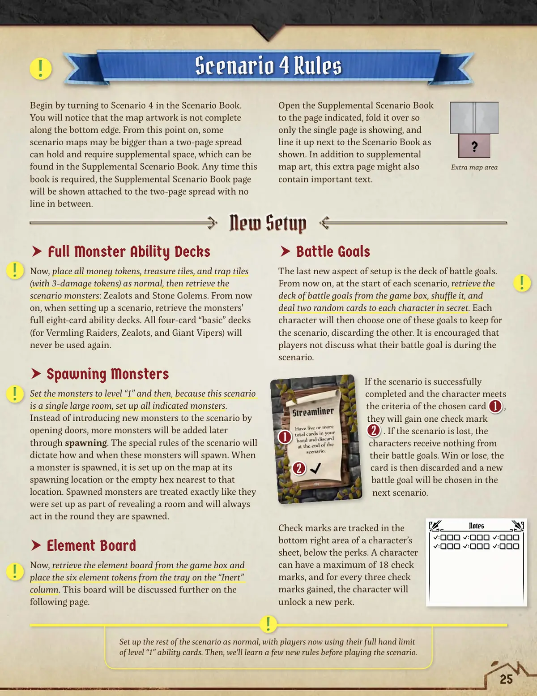
完整怪物能力牌库
现在，像平常一样放置所有金钱指示物、宝藏板块和陷阱板块（带3点伤害指示物），然后取出场景怪物：狂热者和石头傀儡。从现在开始，在设置场景时，取出怪物的完整八张能力牌库。所有四张"基础"牌库（对于蠕虫掠夺者、狂热者和巨型蝰蛇）将不再使用。
生成怪物
将怪物设置为"1级"，然后因为本场景是一个大房间，设置所有指示的怪物。不是通过开门来向场景引入新怪物，而是稍后通过生成来添加更多怪物。场景的特殊规则将规定这些怪物如何以及何时生成。当怪物被生成时，它会在地图上设置在其生成位置或该位置最近的空六边形上。生成的怪物被完全等同于作为揭示房间的一部分被设置，并且总是在它们被生成的回合行动。
元素板块
现在，从游戏盒中取出元素板块，并将托盘中的六个元素指示物放在"Inert"（惰性）列上。这个板块将在下一页进一步讨论。
!
!
!
首先，翻到场景书中的场景4。你会注意到地图底部边缘的地图艺术是不完整的。从这一点开始，一些场景地图可能比两页展开所能容纳的更大，需要额外的空间，可以在补充场景书中找到。任何时候需要这本书时，补充场景书的页面会显示附着在两页展开上，中间没有线条。
将补充场景书翻到指示的页面，将其折叠起来只显示单页，并如图所示与场景书对齐。除了补充的地图艺术外，这个额外页面也可能包含重要文本。
战斗目标
设置的最后一个新方面是战斗目标牌库。从现在开始，在每个场景开始时，从游戏盒中取出战斗目标牌库，洗牌，并秘密给每个角色发两张随机牌。然后每个角色会选择其中一张目标牌保留用于本场景，弃掉另一张。鼓励玩家在场景期间不要讨论他们的战斗目标是什么。
如果场景成功完成且角色满足了所选卡牌的标准
，他们将获得一个勾选标记
。如果场景失败，角色从他们的战斗目标中得不到任何东西。无论输赢，这张牌都会被弃掉，并在下一个场景中选择新的战斗目标。
勾选标记在角色表格的右下角区域追踪，在特长下方。一个角色最多可以有18个勾选标记，每三个勾选标记
获得的分数，角色将解锁一个新的特长。
按照正常方式设置场景的其他部分，玩家现在使用他们完整的"1"级能力牌手牌上限。然后，我们将在进行场景前学习一些新规则。
!
场景4规则
场景4规则
场景4规则
场景4规则
!
!
额外地图区域
?
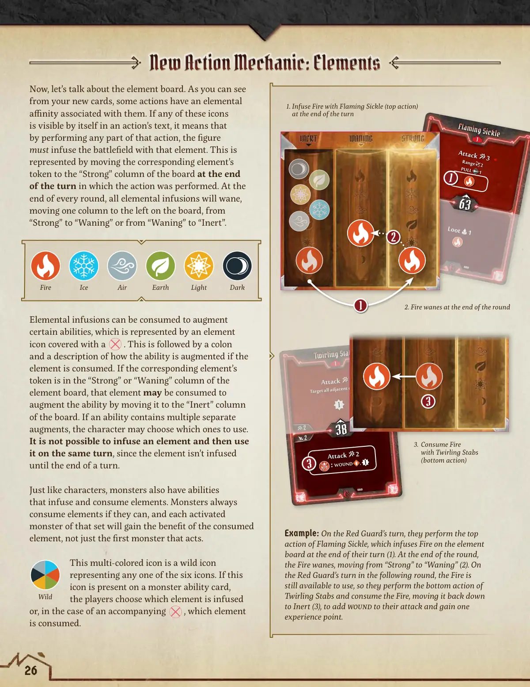
现在，让我们来谈谈元素版图。正如你从新卡牌中看到的那样，有些行动带有元素亲和性。如果这些图标中的任何一个在行动文本中单独出现，这意味着通过执行该行动的任何部分，角色必须将那种元素注入战场。这通过在执行该行动的回合结束时，将相应元素的指示物移动到版图的"强效"列来表示。在每个回合结束时，所有元素注入都会减弱，在版图上向左移动一列，从"强效"到"减弱"或从"减弱"到"无效"。
元素注入可以被消耗来增强某些能力，这表现为一个被 覆盖的元素图标。后面跟着一个冒号和一段描述，说明如果消耗该元素，能力如何增强。如果相应元素的指示物位于元素版图的"强效"或"减弱"列中，该元素可以被消耗来增强能力，方法是将其移动到版图的"无效"列。如果一个能力包含多个独立的增强效果，角色可以选择使用哪些。在同一回合注入元素然后使用它是不可能的，因为元素直到回合结束时才会被注入。
就像角色一样，怪物也有注入和消耗元素的能力。怪物总是尽可能消耗元素，并且该套牌中每个激活的怪物都会获得消耗元素带来的好处，而不仅仅是第一个行动的怪物。
这个多色图标是一个万能图标，代表六个图标中的任意一个。如果这个图标出现在怪物能力卡上，玩家选择注入哪种元素，或者在伴随有 的情况下，选择消耗哪种元素。
示例：在红卫的回合，他们执行火焰镰刀的顶部行动，在他们的回合结束时在元素版图上注入火元素(1)。在回合结束时，火元素减弱，从"强效"移动到"减弱"(2)。在下一轮红卫的回合，火元素仍然可以使用，所以他们执行旋转刺击的底部行动，消耗火元素，将其移回无效状态(3)，为他们的攻击增加伤害并获得1点经验值。
新行动机制：元素
新行动机制：元素
新行动机制：元素
攻击 2
目标：所有相邻敌人
旋转刺击
攻击 2
: 伤害 , 1
万能
攻击 3
射程 2
拉扯 1
火焰镰刀
战利品 1
3. 用旋转刺击消耗火元素
（底部行动）
2. 火元素在回合结束时减弱
- 用火焰镰刀（顶部行动）在回合结束时注入火元素
风
冰
火
土
光
暗
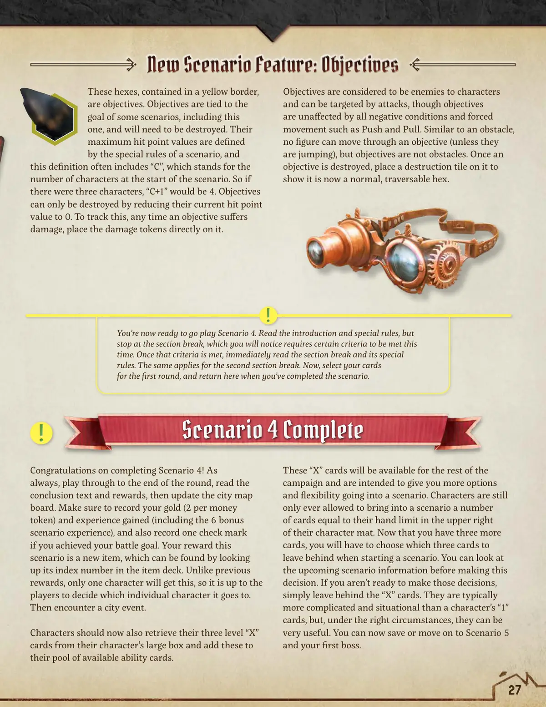
恭喜你完成了场景4！一如既往，玩到本轮结束，阅读结论文本和奖励，然后更新城市地图版图。确保记录你获得的金币（每个代币2点）和经验值（包括6点奖励场景经验），如果你达成了战斗目标，也记录一个勾号。你本场景的奖励是一件新物品，可以通过在物品牌库中查找其索引号来找到。与之前的奖励不同，只有一名角色会获得这件物品，因此由玩家决定这件物品归哪个角色所有。然后遭遇一个城市事件。
角色现在也应该从他们角色的大盒子中取出他们三张等级为"X"的牌，并将这些牌添加到他们可用的能力牌池中。
这些"X"牌将在整个战役中可用，旨在为你在进入场景时提供更多选择和灵活性。角色仍然只允许带入场景的牌数等于其角色版图右上角的手牌上限。现在你多了三张牌，在开始场景时，你必须选择留下哪三张牌。在做这个决定之前，你可以查看即将到来的场景信息。如果你还没准备好做这些决定，就简单地留下"X"牌。它们通常比角色的"1"牌更复杂且依赖情境，但在适当的情况下，它们可能会非常有用。现在你可以保存进度或继续进行场景5和你的第一个Boss。
场景4完成
场景4完成
你现在准备好进行场景4了。阅读介绍和特殊规则，但在章节分隔处停下，你会注意到这次需要满足某些条件。一旦满足这些条件，立即阅读章节分隔处及其特殊规则。第二个章节分隔处也是如此。现在，为第一轮选择你的牌，完成场景后返回此处。
!
这些带有黄色边框的六边形是目标物。目标物与某些场景的目标相关联，包括本场景，需要被摧毁。它们的最大生命值由场景的特殊规则定义，这个定义通常包含"C"，代表场景开始时的角色数量。所以如果有三个角色，"C+1"就是4。目标物只能通过将其当前生命值降至0来摧毁。为了追踪这一点，任何时候目标物受到伤害，直接将伤害指示物放在它上面。目标物被视为角色的敌人，可以被攻击锁定，但目标物不受所有负面条件和强制效果的影响。
新场景特性：目标
像障碍物一样的移动，如推和拉。与障碍物类似，没有任何单位可以穿过目标（除非他们在跳跃），但目标不是障碍物。一旦目标被摧毁，在其上放置一个摧毁板块，以显示它现在是一个普通的、可穿越的六边形。
新场景特性：目标
新场景特性：目标
新场景特性：目标
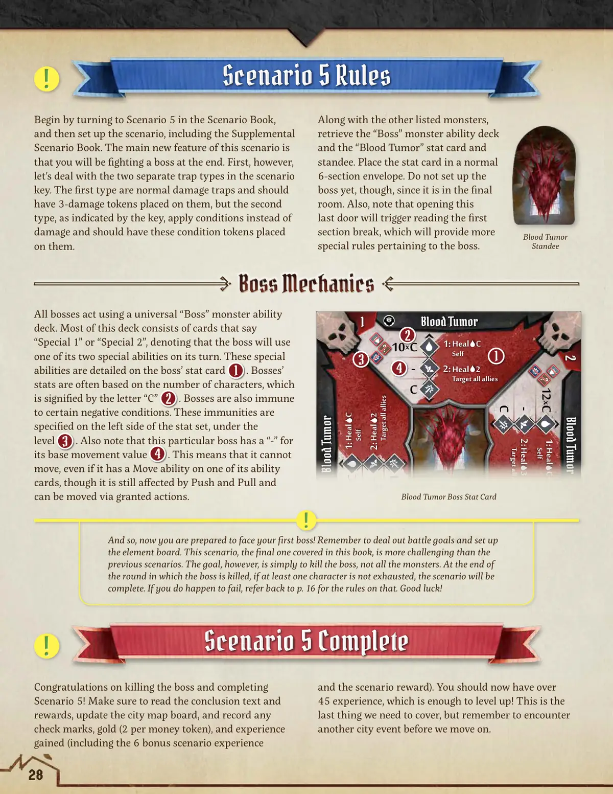
首先，翻到场景书中的场景5，
然后设置该场景，包括补充场景书。这个场景的主要新特点是
你将在最后与一个Boss战斗。然而，首先，
让我们处理场景密钥中的两种不同类型的陷阱。第一种类型是普通伤害陷阱，
应在上面放置3点伤害指示物，但第二种类型，
如密钥所示，施加效果而非伤害，
应在上面放置这些效果指示物。
除了列出的其他怪物外，
取出"Boss"怪物能力牌库
和"Blood Tumor"状态卡和立牌。
将状态卡放入一个普通的
6格信封中。不过，
不要现在就设置Boss，
因为它在最后一个房间中。另外，
请注意打开这扇最后的门将触发阅读第一个章节分隔符，
这将提供更多与Boss相关的特殊规则。
所有Boss都使用通用的"Boss"怪物能力牌行动。
这个牌库的大部分卡片上写着"特殊1"或"特殊2"，
表示Boss在其回合中将使用其两个特殊能力之一。
这些特殊能力在Boss的状态卡上有详细说明 。
Boss的状态通常基于角色数量，这用字母"C"表示 。
Boss也对某些负面效果免疫。这些免疫性在状态卡集的左侧，
等级下方指定 。还要注意，这个特定的Boss的
基础移动值为"-" 。这意味着它不能移动，
即使它的能力卡上有移动能力，但它仍然会受到推和拉的影响，
并且可以通过获得的能力被移动。
恭喜你击败了Boss并完成了场景5！确保阅读结论文本和奖励，
更新城市地图版，并记录任何勾选标记、金币（每枚金钱指示物2点）和
获得的经验值（包括6点奖励场景经验和场景奖励）。
你现在应该有超过45点经验值，这足以升级了！
这是我们最后需要讲解的内容，但记住在我们继续之前
要再遭遇一次城市事件。
场景5完成
场景5完成
场景5规则
场景5规则
现在，你已经准备好面对你的第一个Boss了！记得分发战斗目标并设置元素版图。
这个场景是本书中最后一个场景，比之前的场景更具挑战性。
然而，目标仅仅是击败Boss，而不是所有怪物。
在Boss被击败的回合结束时，如果至少有一个角色未耗尽，
场景即告完成。如果你确实失败了，请参考第16页的相关规则。
祝你好运！
Boss机制
Boss机制
Boss机制
!
!
治疗 C
自身
10xC
-
C
12xC
-
C
1:
##:
治疗 2
目标：所有盟友
治疗 C
自身
1:
2:
治疗
目标
治疗
自身
1:
2:
治疗 2
目标：所有盟友
血块肿瘤
血块肿瘤
血块肿瘤
7xC
-
C-1
治疗 C
自身
10xC
-
C
12xC
-
C
1:
2:
治疗 2
目标：所有盟友
治疗 C
自身
1:
2:
治疗 3
目标：所有盟
治疗 C+1
自身
1:
2:
治疗 2
目标：所有盟友
血块肿瘤
血块肿瘤
血块肿瘤
血块肿瘤
立牌
血块肿瘤 Boss 状态卡
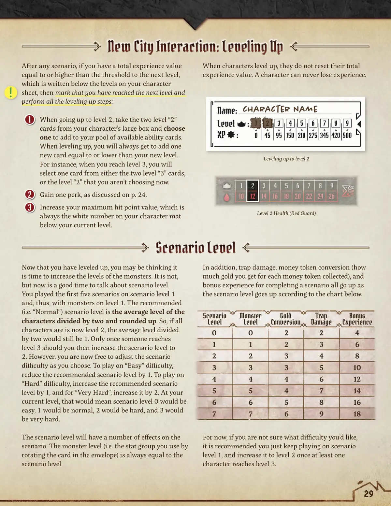
既然你已经升级了，你可能会认为是时候提升怪物的等级了。事实并非如此，但现在正是讨论场景等级的好时机。
你在前五个场景中都在场景等级1上进行了游戏，因此怪物也是等级1。推荐（即"普通"）的场景等级是角色平均等级除以二然后向上取整。所以，如果所有角色现在都是等级2，平均等级除以二仍然是1。只有当有人达到等级3时，才应将场景等级提升到
2。然而，你现在可以自由选择调整场景难度。要在"简单"难度下游戏，将推荐场景等级减1。要在"困难"难度下游戏，将推荐场景等级加1，而"非常困难"则加2。在你当前的等级下，这意味着场景等级0为简单，1为普通，2为困难，3为非常困难。
场景等级将对场景产生多方面影响。怪物等级（即通过旋转信封中的卡片使用的属性组）始终等于场景等级。
此外，陷阱伤害、金钱指示物兑换（每收集一个金钱指示物获得多少金币）以及完成场景的奖励经验值都会随着场景等级的提高而增加，具体如下表所示。
目前，如果你不确定想要什么难度，建议你继续在场景等级1上游戏，并在至少有一个角色达到等级3后将等级提升到2。
在任何场景之后，如果你的总经验值达到或超过下一级的阈值（该阈值写在你角色卡片的等级下方），那么标记你已经达到下一级并执行所有升级步骤：
升级到等级2时，从你角色的大盒子中取出两张等级"2"的卡片，并选择一张添加到你可用的能力牌池中。
升级时，你总能添加一张等于或低于你新等级的新牌。
例如，当你达到等级3时，你将从两张等级"3"的牌中，或者你现在不选择的等级"2"的牌中选择一张。
获得一个特长，如第24页所述。
提高你的最大生命值，这始终是你角色垫子上你当前等级下方的白色数字。
角色升级时，他们不会重置其总经验值。角色永远不会失去经验值。
新城市互动：升级
场景等级
新城市互动：升级
新城市互动：升级
场景等级
场景等级
!
升级到等级2
角色名称
等级2生命值（红色守卫）
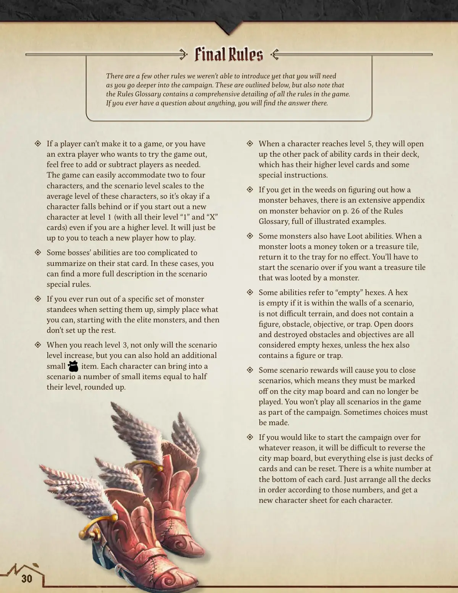
如果有玩家无法参加游戏，或者你有多余的玩家想要尝试这款游戏，请根据需要随时增加或减少玩家数量。游戏可以轻松容纳2到4个角色，场景等级会根据这些角色的平均等级进行调整，所以如果一个角色落后了，或者即使你是高级别，也从1级开始一个新角色（带着他们所有的"1"级和"X"级卡牌），也没关系。你只需要负责教导新玩家如何游戏即可。
一些Boss的能力过于复杂，无法在他们的状态卡上总结。在这些情况下，你可以在场景特殊规则中找到更完整的描述。
如果在设置时用完了一组特定的怪物立牌，只需尽可能放置它们，从精英怪物开始，然后不要设置剩下的。
当你达到3级时，不仅场景等级会提高，你还可以额外携带一个小型物品。每个角色可以带入场景的小型物品数量等于其等级的一半，向上取整。
当角色达到5级时，他们将开启自己牌组中的另一包能力卡，其中包含他们的高级卡牌和一些特殊说明。
如果你在弄清楚怪物行为时遇到困难，规则词汇表第26页有一个关于怪物行为的详细附录，包含大量图示示例。
一些怪物还具有掠夺能力。当怪物掠夺金钱指示物或宝藏板块时，将其放回托盘且无效。如果你想要一个被怪物掠夺的宝藏板块，你必须重新开始场景。
一些能力指的是"空"的六边形格。一个六边形格是空的，如果它在场景的围墙内，不是困难地形，并且不包含任何角色、障碍物、目标或陷阱。打开的门和被摧毁的障碍物和目标都被视为空六边形格，除非该六边形格也包含角色或陷阱。
一些场景奖励会导致你关闭场景，这意味着它们必须在城市地图版图上被标记出来，并且不能再被游玩。在战役中，你不会游玩游戏中的所有场景。有时必须做出选择。
无论出于何种原因，如果你想重新开始战役，将城市地图版图翻回去会有些困难，但其他所有内容都是牌组，可以重置。每张卡牌底部都有一个白色数字。只需根据这些数字将所有牌组按顺序排列，并为每个角色获取一张新的角色表。
还有一些我们尚未介绍的其他规则，当你深入战役时会需要它们。这些规则概述如下，但请注意
规则词汇表包含了游戏中所有规则的详细说明。
如果您有任何疑问，都可以在那里找到答案。
最终规则
最终规则
最终规则
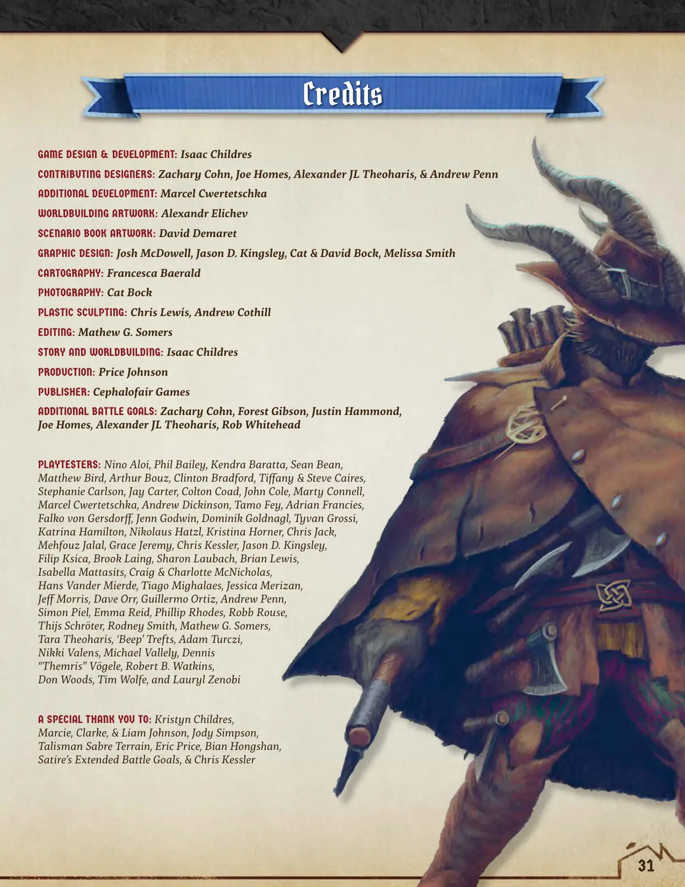
游戏设计与开发：Isaac Childres
合作设计师：Zachary Cohn, Joe Homes, Alexander JL Theoharis, & Andrew Penn
额外开发：Marcel Cwertetschka
世界观艺术：Alexandr Elichev
场景书艺术：David Demaret
平面设计：Josh McDowell, Jason D. Kingsley, Cat & David Bock, Melissa Smith
地图绘制：Francesca Baerald
摄影：Cat Bock
塑料雕塑：Chris Lewis, Andrew Cothill
编辑：Mathew G. Somers
故事与世界观：Isaac Childres
制作：Price Johnson
出版商：Cephalofair Games
额外战斗目标：Zachary Cohn, Forest Gibson, Justin Hammond, Joe Homes, Alexander JL Theoharis, Rob Whitehead
测试玩家：Nino Aloi, Phil Bailey, Kendra Baratta, Sean Bean, Matthew Bird, Arthur Bouz, Clinton Bradford, Tiffany & Steve Caires, Stephanie Carlson, Jay Carter, Colton Coad, John Cole, Marty Connell, Marcel Cwertetschka, Andrew Dickinson, Tamo Fey, Adrian Francies, Falko von Gersdorff, Jenn Godwin, Dominik Goldnagl, Tyvan Grossi, Katrina Hamilton, Nikolaus Hatzl, Kristina Horner, Chris Jack, Mehfouz Jalal, Grace Jeremy, Chris Kessler, Jason D. Kingsley, Filip Ksica, Brook Laing, Sharon Laubach, Brian Lewis, Isabella Mattasits, Craig & Charlotte McNicholas, Hans Vander Mierde, Tiago Mighalaes, Jessica Merizan, Jeff Morris, Dave Orr, Guillermo Ortiz, Andrew Penn, Simon Piel, Emma Reid, Phillip Rhodes, Robb Rouse, Thijs Schröter, Rodney Smith, Mathew G. Somers, Tara Theoharis, 'Beep' Trefts, Adam Turczi, Nikki Valens, Michael Vallely, Dennis "Themris" Vögele, Robert B. Watkins, Don Woods, Tim Wolfe, and Lauryl Zenobi
特别感谢：Kristyn Childres, Marcie, Clarke, & Liam Johnson, Jody Simpson, Talisman Sabre Terrain, Eric Price, Bian Hongshan, Satire's Extended Battle Goals, & Chris Kessler
鸣谢
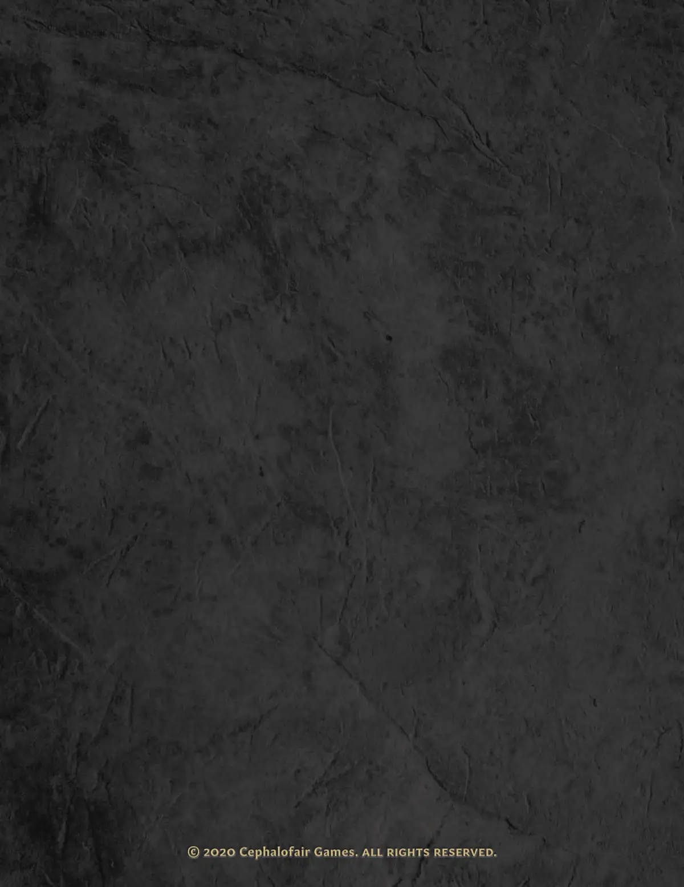
© 2020 Cephalofair Games. 保留所有权利。